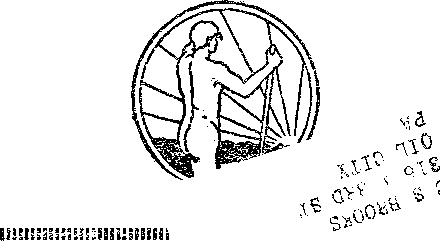

SCIENCE AND INVENTION
A JOURNAL OF FACT HOPE AND COURAGE
in tt,
THE CASE OF KOREA YOUTH
ONE-DAY FACTORY UTOPIA WHOLE WHEAT BREAD ORTHODOX MEDICAL ETHICS EUGENICS AND BARBARISM THE PENTATEUCH DISOBEDIENCE THE WAY TO DEATH
every other WEDNESDAY five cents a copy one dollar a year Canada & Foreign 1.25
Vol. XII - No. 310 August 5, 1931
SCIENCE AND INVENTION
LABOR AND ECONOMICS
3,000,000 on the Payroll . , 711
How Soldiers Spent Money . 715
SOCIAL AND EDUCATIONAL
Youth .......... 710
Kernels from the Cob .... 711
The Five Largest Cities .... 711
Better Feeling About Hughes . 712
Yale Drops Latin and Creek . . 713
Pilotless Plane Flown . . . Hupamotor a Success . , . World’s Largest Bank Vault . At Last the Parking Machine .
Now Salesmen Must Go . .
An Electrical Map . . . .
Secret of Oratorical Power .
. 711 . 712 , 713 . 714 . 715 . 715 .721
Freeman Charges Against Hoover 715 j The One-Day Factory Utopia . 716 i A Scotchman’s Vacation . . . 723 I
FINANCE—COMMERCE—TRANSPORTATION i
122 Air Routes Operated . . .711
Less-than-Carload Containers . , 713
Some of Instill’s Babies . . . 714
Usury ......... . cl i
HOME AND HEALTH
Uses of Slippery Elm Bark .
How to Remove Spots . . . Whole Wheat Bread . . . . Orthodox Medical Ethics . . Eugenics and Barbarism . . .
720
720
POLITICAL—DOMESTIC AND FOREIGN
Why the Hugo Deficit ? . . . 712
Twelve Years After the War . , 714
Spain’s Progress in Liberty . . 714
Beaverbrook's Fight Against
League .........715
Ellis Island in the Limelight . 718
Herbert Hoover’s Optimism . . 723
Frightening Enemy by Noises . 724
TRAVEL AND MISCELLANY
Ths Case of Korea . . . . First Unveiled Princess . . . Juries Abolished in Italy . . Good Conditions in Iceland .
Soviet Agricultural Policy .
Cuba’s Debt to Mrs. Ryder , .
RELIGION AND PHILOSOPHY
AGRICULTURE AND HUSBANDRY
Chain Store Potato Farms , , 713
Russian Wheat Gluts Market . 714
. 707 . 711 . 713 . 71.3 . 718 . 723
How Easy It Is to Be Deceived ’ Odd Fellow and Masonic Prayers Authenticity of The Pentateuch Seventeen Lies in One Letter . Believe It or Not ......
Disobedience the Way to Death
721
728
729
730
730
731
Published every other Wednesday at 117 Adams Street, Brooklyn, N. Y., l, S. A,, by WOODWORTH, KNORR & MARTIN
Copartners and Proprietors Address: 111 Adams Street, Brooklyn, N. I’., U. &. A, CLAYTON J. WOODWORTH.. Editor ROBERT J. MARTIN . . Business Manager NATHAN H, KNORR.. Secretary and Treasurer
Five Cents a Copy—$1.00 a Year Make Remittances to T1IE GOLDEN AGE Notice to Subscribers: For your own safety, remit by postal or express money order, We do not. as a rule, send acknowledgment of a renewal or a new subscription., Renewal blank (carrying notice of expiration) is sent with the journal one month before the subscription expires. Change of address, when requested, may be expected, to appear on address label within one month.
Translations published in Finnish, German, Norwegian, Polish, and Swedish^ Offices in Other Countries
British ............ 34 Craven Terrace, London, W. 2, England
Ca-nadian ........... 40 Irwin Avenue, Toronto 5, Ontario, Canada Australasian ....... 7 Beresford Rd., Strathfield, N. S. W., Australia South Africa , <, 6 Lelie Street, Cape Town, South Africa
Entered as second-class matter at Brooklyn. N, under the Act of March 3, 1.87&
'A1,...... ;■ — , w.1;- •_:■„• „ ^..v.>..-.v,.,.rir.:*3ga^^ Volume XII Brooklyns Ne Y.s Wednesday, August 5, 1931 Number 310
A PAMPHLET entitled Korea Must Be Free, put out by the Korean Commission, Washington, D. C., sets forth some of the sufferings of that land under Japanese administration and usi.rpation.
At the outbreak of the Russo-Japanese War the Japanese government made an alliance with Korea guaranteeing the independence of the latter country in exchange for the privilege of using the Hermit Kingdom as a road by which to attack the Russian forces in and about Harbin,
As the war went on and Japan became confident of victory, need for keeping Korea even moderately satisfied had gone. The fair wages that the Korean laborers had received was cut down to one-sixth of its former figure, while the cost of all commodities rose to double price. The Koreans were reduced to starvation wages and were compelled, often at the point of the sword, to perform their work. Japanese armed men would invade a village and commandeer all the able-bodied men at the time of harvest when their labor was indispensable for the harvesting of the crops. Enormous areas of the best arable land were seized for the railroad without compensation, and when some of the owners protested they were taken out and shot. Photographs of their crucified and riddled bodies have been preserved. :
When ex-President Roosevelt returned from his trip through Africa he tvas entertained by the then Kaiser Wilhelm of Germany. The kaiser showed Teddy the vast military organization he had built up, and the endless supplies of war material, and Teddy is said to have been the indirect cause of the World War by saying to the kaiser, ‘With that outfit I could lick the world.” The kaiser tried it, and is spending the rest of his days at Doorn.
Something of this belligerency seems to have been in Mr. Roosevelt's advice to Japan at the conclusion of the Russo-Japanese War:
At the Treaty of Portsmouth, according to his own written statement, President Roosevelt advised the Japanese to seize the power in Korea and take charge
of her foreign affairs. The United States was at that time in full treaty relations with Korea. The action at Portsmouth was taken without consultation from Korea, without asking to what extent, if any, such action would be satisfactory and without giving Korea an opportunity to offer arguments to the contrary. The only reason why Korea excuses this action is that she feels sure that if the American people as a whole had known what was going on they would have made such objections as would have prevented such a breach of international equity.
Plow the Japanese helped themselves to the property of the Korean people without any objection’s being offered by the military authorities is another item that makes one realize how far the Koreans have been from getting anything remotely approaching a square deal:
The military party was strongly intrenched in the Peninsula and they dominated the situation. Time and again, to the specific knowledge of American and other foreign residents of Korea, the civil and military factions clashed in the administration of affairs. Marquis Ito was wholly unable to control the police and gendarmery. Any good intentions he may have had in the line of proper treatment of the Korean people were frustrated by the powerful influence of the militarists. Witness, for instance, an event that happened in 1906, when Viscount Tanaka, the minister of the household to the emperor of Japan, was sent as a special envoy to attend the wedding of the crown prince of Korea. He was a leading member of the militaristic party. Pie had the effrontery to ask the emperor of Korea to give him an ancient pagoda that had stood since 1356 as one of the most distinguished landmarks of Korean history. It was an enormous structure of twenty-seven stories. The Emperor mildly expostulated with him, saying that the pagoda did not belong to him but to the nation. The request was refused. Thereupon Viscount Tanaka sent eighty-five armed men, tore down the pagoda, loaded it on a train and took it away to Japan! Such a thing might have been expected of an ordinary Japanese bandit, but that the formal representative of the emperor of Japan, on an official visit, when every act was constructively the act of his own emperor, should have been guilty of such' a piece of vandalism would be utterly unbelievable were not the evidence so damning. And what did Marquis Ito, the resident-general, do about it? He must have been humiliated beyond measure by such an unconscionable insult not only to the emperor of Korea but to himself as the representative of the Japanese government. He did nothing! He could do nothing. The most humiliating thing about it must have been that he could not throw up his job as a protest against this stultifying insult, for that would have been a reflection upon his own master. He had to take his medicine and keep still.
Mr. Roosevelt's advice was followed with a vengeance, and in a typically Japanese fashion:
The tragic farec began when Japanese police appeared at a missionary school in Sun-ehun and ordered all the students to go to the railway station and greet the Japanese governor-general as he passed through on the train. The students obeyed, but before they were allowed on the station platform they were all rigorously searched for lethal weapons. One small chap was deprived of his penknife. The train arrived, the governor-general came out and inspected the company of students and then went on.
A few days later the police arrested the whole school on the charge that they had conspired to assassinate the governor-general. It is credibly asserted that the police made the officer believe that it was through their vigilance and promptitude that his life was saved! Not only in Sun-ehun, but all over Korea, the leading men in. Christian circles were arrested until a hundred and twenty-three had been lodged in prison in Seoul. These men were kept for months entirely incommunicado. Neither their friends, their relatives nor their lawyers were allowed access to them. These men were subjected to torture in order to extract confessions from them. They were hung up by their thumbs twisted behind their backs; they were striped with hot irons; lighted cigars were pressed against the genital organs; their nails were torn out, and other things were done that were so much worse than these that common decency prevents us from describing them. These periods of torture were extended to many hours, up to a maximum of twenty-three hours. The police were well aware that these Koreans could not confess “intelligently”, for-they knew nothing about a plot. In order to make the confessions tally with the plan which the Japanese had made, the police commanded them to answer Yes to every question that was asked them or suffer the consequences. Nothing but that one word was permitted. The Korean, hanging there by his thumbs, his body racked with pain, knowing that it was a lie and knowing that they knew it was a lie, would finally gasp out the desired word, In this way the confessions all corroborated each other. The police had made out a perfect case! The trouble is, they overreached themselves and proved too much. Any legal authority will say that it would be impossible for a hundred and twenty-three men to give independent evidence covering even one-tenth of the ground which this did and have it all dove-tail so well together that there are no discrepancies. That is what the Japanese did in that trial.
Finally the case was brought into court. This was necessary in order to prove to the public that the charge was a bona fide one. Twenty Americans and Canadians attended that trial ewery day and all day as long as it continued. They could not be excluded.
One of the accused Korean prisoners would be brought in. The Japanese judge would hold up the paper containing his confession in prison and ask him if he would corroborate the statements therein. The Korean would declare it to be a lie from start to finish, and would state that the confession had been wrung from him by torture. This the judge would indignantly deny. In one case the prisoner attempted to pull up his sleeve to show the marks of torture, but the judge harshly commanded him not to do so! .
The judge condemned one hundred and six men to penal servitude for periods ranging from five to ten years. The Japanese lawyers who had been retained for the defense asked the privilege of producing one hundred and fifty-six witnesses for the defense, but the judge said that this was not necessary! When judgment was pronounced these lawyers of the defense were so outraged at the miscarriage of justice that they tried to have the judge impeached. The Korean victims had been made to confess that the American missionaries had urged them to assassinate the governor-general and had furnished them the arms with which to do it! After the trial some of these Americans came forward and said that if they had been implicated in this plot as its prime movers, it was they, and not the Koreans, who should be arrested and punished. The Japanese protested that they did not put any faith in this part of the evidence! Instead of accomplishing their purpose of discrediting Christianity in Korea the Japanese discredited themselves and involved themselves in a tangle of inconsistencies which made them the laughing stock of the civilized world. The judgment was speedily reversed by the Court of Appeals and all but six of the men were released. Even yet, the government tried to save its face by keeping in prison six of the accused, but at last released them as a matter of “clemency” on the event of some Japanese holiday, They were forgiven!
Japan’s purpose to secure possession of the natural resources of Korea was illustrated in the formation of The Oriental Development Company, whose purpose was the exploitation of Korea and Manchuria-. A large part of the stock of this company was held by the imperial family in Japan, Millions of dollars
were borrowed from American financiers—money that never would have been loaned, it is to be hoped, if the lenders had known how it was to be used. The best arable land in Korea was wrested from its owners by all sorts of trickery and fraud. In many cases the forms of law were observed, but full advantage was taken of the ignorance of the law on the part of the Korean peasantry. Let us illustrate this by a single case. A Japanese professes friendship for a Korean farmer and offers to lend him money at a low rate of interest for the improvement of his farm. The bond states that if. the money is not repaid on a certain day the farm reverts to the Japanese. On the day for payment the Korean brings his money to the office oi’ home of the Japanese in order to settle the account. II'' has the money in hand. But the Japanese is not there, nor can he be found. The Korean repeats the attempt each day for a week or so without success. At last the Japanese returns and claims the farm on the ground that the money was not paid when due. The court, dominated by the Japanese, gives the decision in favor of the Japanese citizen, and the Korean loses his farm. In one case the Korean was too clever for the Japanese. Unable to find his creditor, the Korean deposited the money in the bank in the name of the creditor and had a notary public witness the transaction. Even then, he had to take the matter through two or three courts before he secured his rights. It cost him a large amount of money and of time, but he won out. When we remember that every case in court in Korea is conducted in the Japanese language, which comparatively few Koreans understand, we will see that this alone is an act of oppression scarcely to be measured in moderate terms. A number of Koreans combined to carry on scientific agriculture. They sent and purchased a large amount of fertilizer in Manchuria, but the Japanese railroad delayed the transportation of the goods until the time for using it had long passed, and the Koreans lost everything. Meanwhile that same railroad had transported large amounts of the same commodity to Japanese in Korea, the orders for which were given long after the Korean order had been received and the goods had been paid for. Any number of such tricks were and are played by the Japanese to hamper and discourage Korean native enterprise. Many Koreans produce raw silk, but they are not allowed to sell it in the open market. They have to sell it to the Japanese at a starvation figure, and the Japanese make the profit. In order to get hold of rich timber’ land held by private Koreans the authorities passed the law that unless all such land should be registered by a certain date the land would be forfeited. But they did not see to it that this edict received prompt and wide circulation. Hundreds of these owners never heard about it, with the result that they lost their holdings. Everything proves that the Japanese have no thought for the welfare of the Koreans but are solely bent upon getting their hands upon everything that spells money in the Peninsula. A careful estimate shows that at the present time three-fourths of the best land in Korea has been alienated to the Japanese and the Koreans are being reduced to a condition like that of the Helots of ancient Greece.
At length thirty-three representatives of the Korean people met in a certain restaurant in Seoul and, in protest at Japan’s betrayal of her promises, issued a Declaration of Independence.
The thirty-two signers of The Declaration of Independence, sitting quietly in that restaurant, sent to the Japanese police headquarters and informed the police that they were in the restaurant and could be found there at any time. The police raided the place and haled those men away to prison. One of the signers had not yet arrived in Seoul. When he came his friends offered to hide him, but he scorned to be hidden. He walked to police headquarters and gave himself up, knowing full well that torture and death awaited him. One can judge from this whether the Korean people have stamina or not. The pity of it is that the world has not been made aware of the facts. There followed an orgy of harshness and brutality on the part of the Japanese which, next to the murder of the queen, is the foulest blot on the flag of that powerful country. The police and soldiers charged the unarmed crowds with swords, spears, rifles and every other form of weapon. Even the hooks were used which are needed to pull down houses in the path of fire. Private houses were raided by the lowest class of Japanese thugs, and the people were subjected to the most savage brutality. It would require a volume to recount the particulars of this sanguinary repression. We must refer the reader to the report by The Federal Council of Churches which they issued but which they do not seem to have distributed very freely. The atrocities perpetrated in Korea at that time far exceed in number and in harshness anything that was done on the Congo by the agents of Leopold.
Ilcnv the enlightened Japanese dealt with the strangers in their midst in a time of national catastrophe appears from the account of Avhat happened at the time of the Japanese earthquake, and makes one glad that the Pacific Ocean is as wide as it is:
At the time of the earthquake in Japan there w’ere more than ten thousand Koreans in Tokyo and Yokohama. They were students, merchants and ordinary workmen. They had no money, no organization, no power. They were peaceful citizens bent only upon making an honest living.
When that frightful cataclysm struck Japan the government was temporarily paralyzed. Tokyo and Yokohama were a veritable shambles. Among the first acts of the authorities was to send out a statement that the Koreans were looting, that they were poisoning wells, that they were using bombs and that they presented a grave danger to the Japanese populace, People everywhere were advised to kill the Koreans at sight. The evidence of this fact is given by more than one witness, but specifically by an American citizen connected with the dock service in Yokohama, He was on the spot and was conversant with the situation. Of course the accusation was absurd. If we search for a possible explanation for this almost unbelievable outrage it will be found in the fact that there existed in Tokyo and Yokohama a very large number of disaffected Japanese, criminals and blacklegs, whom the government suspected of Bolshevistic tendencies. They were quite capable of taking advantage of the general confusion to engage in plunder, It is believed that the charge against the Koreans was deliberately made in order to direct the felonious energies of these lawless Japanese into a channel that would relieve the pressure upon the. Japanese population. In other words, it wms a sort of safety valve, a counterpart of the letting loose of that same horde of bandits upon Korea at the time of the Russo-Japanese ‘War.
The result was that the Koreans were hunted down by these ruffians and killed by the thousands. It is estimated that nine thousand Koreans perished in the earthquake, five thousand of whom were massacred. Hundreds of them were roped together, in bunches of five, driven into old barges, sprayed with oil and burned to death, This is no mere rumor, It was witnessed by American citizens in broad daylight. Scores of Koreans made their way into the police headquarters for safety and were there cut down. We have photographs of acres of land covered with their dead bodies, telegraph poles festooned with their bodies, hanging by wires. An American citizen named W. H. Stevens was taking his family and some friends to Nikko by automobile. They wore stopped by a band of Japanese and compelled to witness the murder of eight Koreans by bayoneting them through the abdomen. When these men were dead, the Japanese laid the bodies in the road and compelled the American to drive his machine over the corpses! This was done, seemingly, in pure contempt for the well-known sympathies of Americans for the Korean people. This happened as late as the year 1923, which shows that the vaunted civilization of Japan has not been purged of its innate savagery,
Youth By Eric IF. Walton (London)
MUCH has been said and written in respect to the care of children, but what Of that transitory period between childhood and manhood or womanhood ?
Today there is a great cry about the decadence, the frivolity, and the stupidity of youth. These fruits are the harvest, in many cases of a poor rearing throughout childhood, and in others a good rearing cut short with the stunted idea that youth can take care of itself and that now is the time for the parents to rest.
The parents’ attitude towards youth should be based on knowledge which they should have gathered in their passing through this period; tliis alone can enable them to acknowledge that youth’s freshness, vigor, and reacliing-out to express itself must not be met with a dictatory air and a constant “'thou shall not” (the spirit of suppression), but rather by meeting the son or daughter on his or her own level, not as a child, but as one who has entered into that phase of life in which parents are matured.
Youth must be given a measure of freedom which it demands, that it may have breadth of vision. The buds of aspiration and attainment should not be nipped off, but given a chance to blossom, It is the suppressed creature that becomes warped in mind and has to bury its talents; when it gets, or steals, its freedom, is it a wonder that it runs wild and becomes ensnared?
Give youth a chance, for it has the strength and vigor to handle the best of life’s resources; it has scope to increase its capacity, Parents’ give youth its dues, a youthful fellowship. Show a sympathy with its soaring mind and tactfully stabilize it on realities and facts of life; advise more and. dictate less. Do not tear everything down before its eyes, but build to the best of your ability that which will encourage and help the mind of youth to grow; and youth will prove itself appreciative and will rest more in its environment ami in those circumstances over which it has no control. Through this it will gather wisdom and strength to control its course of action, and will, bring into effect some of those ideals which youth so often is only allowed to dream of.
Parents! rise up to your privilege of duty towards youth.
Kernels from the Cob
Cadman Thinks Pope Will Win
ADMAN thinks that in the row between Mussolini and the pope the pope will win. The pope ought to bless Cadman for that, and
we hope he does. It will serve him right.
The First Unveiled Princess
T JAMMU city, India, May 9, two hundred thousand persons cheered the maharani of
Kashmir as she rode through the city unveiled. This is the first time the wife of a ruling Indian prince has appeared unveiled in public.
The Five Largest Cities ■
HE five largest cities of the world, arranged in the order of their populations as collected
3fi00fl00 on the Payroll
ENATOR BORAH tells us that avo have 3,000,000 on the public payrolls and that whereas our national expenditures were barely one billion dollars in 1914 they are almost five billion dollars in 1931. Forty percent of the increase in government expenditure is attributed to the World War.
Alfonso Worth About 30c
O UIS country Alfonso was worth about 30c, coin of the realm; but he managed to leave
by the census enumerators are: "‘London, 8,202-, 818; New York, 6,981,927; Paris, 4,887,503; Berlin, 4,013,588; Chicago, 3,376,438.”
Divorces at Reno
NYBODY in the United States that is tired of his life companion can get a divorce in
Spain with $2,619,000, and the royal family as a whole got away with $8,497,417. Much of this money was invested abroad; some 60 percent of it outside of Spain. The government has seized four of Alfonso’s pleasure yachts.
Pilotless Plane Flown at Houston.
OCATED nearly half a mile farther up in the sky a plane with a pilot managed anoth
Reno now if he is willing to live there six weeks. The divorce itself takes an average of about ten minutes in the divorce mill, and the lawyer gets about $300 for his work.
How South American Governments Exist
OLIVIA, Peru, Ecuador and Guatemala live in part from proceeds of the Swedish
er plane far below it, over the municipal airport at Houston, late in May. The pilotless plane Avas banked, dipped and turned at will, and shows plainly enough what can be done in time of war.
122 Air Routes Now Operated
HERE are now 122 air mail routes operated in the United States, with 15,258 miles of
match monopoly. Panama permits gambling and lotteries. Venezuela and Ecuador have liquor and tobacco monopolies. Costa Rica has liquor, insurance and other monopolies.
Radio Beacons to Guide Ships
AKING a cue from the guidance of airplanes the ships on the Great Lakes will hereafter
lighted airways for night flying, and 3,221 additional miles under construction. The average monthly pay of pilots at the close of 1930 was $460, a decrease of $90 per month in the calendar year.
Sent the Pickles Ten Times as Far
ROM Gallipolis, Ohio, to Baltimore, Md., by the B. & O., is 479 miles, but a Gallipolis
locate their exact positions by radio, and practically every large vessel on the Lakes will be ecpfipped this season with the new direction finders.
business concern has just sent a cargo of pickles around by way of New Orleans and Key West by water, a distance of approximately ten times as far, because it found the water route was cheaper.
Curative Waters Beneath Cologne
URATIVE waters have been found located 1,200 feet beneath the city of Cologne, and flovring at such a rate that they could be used
for the city’s water needs. These waters, particularly rich in carbonic salts, are said to rank with those of the world’s foremost spas, and Cologne will make the most of her new discovery.
The Ford and Rockefeller Fortunes
HIRTY-ONE years ago Henry Ford was practically penniless, but if he had been born at the time Adam was created, and had received a salary of $500 a day, and saved every cent of it, he would not yet have the fortune which he now possesses. The same statement can be made regarding J. D. Rockefeller.
' 711
The Rupamotor a Success
THE Rupamotor, a Diesel engine which burns powdered coal instead of oil, is declared to be a pronounced success, the cost of operation being less than one-third of that of a Diesel engine using oil. The first engine has been given a six months’ trial in a Czechoslovak shop. In 1932 two large factories will begin the manufacture of Rupamotors on a large scale.
'Wheat at 27c a Bushel
CW. FIELD, an Alberta (Canada) farmer, • with 800 acres in wheat, sold three carloads of his 1930 wheat at 27c a bushel. Of this amount, 16c was paid for threshing, leaving him lie a bushel for plowing, disking, harrowing, drilling, harvesting, twine, and the stackers. His activities for the year left him several hundred dollars in debt at his bank.
Goat Meat from Georgia
NEW YORK annually purchases some ten to twelve thousand carcasses of kids, mostly raised in Georgia. It is claimed that about five thousand more carcasses also find their way into the markets outside of regular channels. Though averaging only six to twelve pounds in weight, the kids bring $5 to $8 each, the meat being much in demand.
Priests Get Walking Papers
HDI-IE Minister of the Interior of Ecuador has ™ instructed the governors of all provinces to deport Catholic priests who use their pulpits for propaganda against the public schools. The church seems to be getting i t in the neck in every corner of the world, fulfilling the Scriptural statement that ‘the horns and the beast shall hate the whore".
Customers Harder to Satisfy
CUSTOMERS used to take almost any old ''-d thing that was handed to them, Now they are getting harder to satisfy. Experience of New York department stores shows that for the years 1924 to 1930 inclusive every year showed an increase in the amount of merchandise returned. It is claimed that every return of merchandise occupies the attention of twenty to twenty-five individuals, and that the cost chargeable annually to this item in the New York metropolitan area amounts to about $105,000,000.
No Icebergs in 1931
npHE year 1931 will go down in history as the -a- year of no icebergs in the North Atlantic ocean. There 'were heavy icebergs only a year ago. As a general rule the Arctic regions are much warmer since 1918 than before. It may be this has something to do with the disappearance of bergs in 1931.
What Aspirin. Does
K SPIRIN does more than kill pain. It kills the nerves themselves. It causes the face to swell, the throat to choke, eruptions of the skin, a sensation of sand in the eyes, and difficult breathing. In many cases it has been known to cause bleeding of the stomach or gastric hemorrhage.
The Five Hundred and the Five Million rpHE Los Angeles Times pungently observes J- that in America we have five hundred men each with income over a million dollars a year, and then we have five million men who do not have any income at all. Seems as if there is something wrong here, doesn’t it? The only way out is God’s way.
Why the Huge Deficit?
k MERICA’S huge deficit of about $1.000,000,
000 has to be met. It is the biggest deficit facing any government in the world. If $3,000,000,000 in tax refunds had not been handed back to corporations that already own about everything in the country worth owning, the country would be in better shape.
Better Feeling About Hughes
THERE is getting to be a better feeling about
Chief Justice Hughes. His argument and decision in favor of freedom of the press, in the Minnesota case, was a ringer, and now, though his side lost, he ranged up fighting powerfully on the minority side in the recent decisions respecting the granting of citizenship to conscientious objectors, Chief Justice Hughes believes that a conscience is something that cannot be ordered around this way and that by Congress or any other body. He recently headed the judicial opinion that the California red flag law is repugnant to the guaranty of liberty of speech contained in the Constitution. He has the courage and love of justice that go to make a great chief justice.
Juries Abolished in Italy
JURIES have been abolished in Italy. Perhaps this is just as well, for justice was abolished there long ago. What is the use of a . jury if it is merely to be a rubber stamp to do as the iron hand of some dictator wishes'? Italy’s professional jurymen, or assessors, will do as they are told. There will be five of these on the bench, along with two official judges.
Theory of Rocket Flights
THE theory of rocket flights is that in the stratosphere friction would be so greatly reduced that travel by recoil power would enable speeds of three thousand miles to be attained. A German inventor expects to go aloft in a rocket some time within a year. His rocket will go up like a bullet, and then spread wings to descend like a sailplane.
Yale Drops Latin and Greek
YALE UNIVERSITY has dropped Latin and
Greek from its entrance requirements, and its example will probably be generally followed by all the great universities, and should be. There is no reason why the youth of today should spend their time in studying languages that have been dead for hundreds of years. There is much other and vastly more important work to do.
World’s Largest Bank Vault'
PAR and away the largest bank vault ever constructed is that built for the Bank of Japan at Tokio. This vault, constructed by the York Safe and Lock Company, of York, Pa., is earthquake-proof, fireproof and burglar-proof, and required two freight trains totaling eighty-nine cars to haul it to the steamer’s side at Baltimore.
Good Conditions in Iceland
WITH neither army nor navy to keep, Iceland is having a relatively easy time during this period of world-wide depression. It is receiving lower prices for its fish, which is the principal product, but it has no unemployment, and, having no taxes worthy of the name, is carrying on public improvements worthy of note. This last year it has built a large radio station and provided for the heating of numerous public buildings, including schools, by hot water pumped from volcanic springs,
The Tower of Babel
p ROFESSOR UNGER, of University of Ber-lin, reports having found cuneiform tablets which confirm the Biblical account of the Toxver of Babel. He states that these tablets show the tower Avas a cubical structure, about 300 feet each way; a zigzag stairway led to the top, where there was a temple and an observatory; the tower was destroyed bv Xerxes about 478 B.C.
Chain Store Potato Farms
TpROM Virginia to Florida the A. & P, sup-plies seed potatoes and fertilizers to potato growers unable to buy their own. The contract is that the A. & P. shall have six barrels of No. 1 potatoes for every bag of seed potatoes furnished. The A. & P. sells potatoes at practically cost of production. Pretty soon it will own the potato farms outright and they will be chain potato farms.
P. R. R. Less-than-Carload Containers
npHE Pennsylvania, which already has 1,00(1 steel containers in use for quick dispatch of less-than-carload freight, has now placed orders fox- 3,250 more, Avhich it is calculated will care for the needs of the whole system. These containers each have a capacity of 10,000 pounds and may be quickly and easily shifted from a freight car to a truck, or vice versa. The P.R.R. has also just placed an order for 150 electric and passenger locomotives for use on the electrified lines between New York and Washington, This electrification, it is expected, will be completed within the next two years,
Everybody Has Tuberculosis
TF YOU have tuberculosis don’t worry about
it. Everybody else has it or has had it. Autopsies show indisputable evidence that 99 percent of all the people who die above thirty years of age either have it or have had it. Under’ these circumstances the tuberculin testing of cattle is the worst kind of folly. Tuberculosis is brought on by wrong eating habits, and cured by right eating habits, Fill your system with enough dirt, and you may contract a case of tuberculosis from which you cannot recover; but don’t blame the tuberculosis for it: blame yourself; you are the one at fault. Eat fruit, and keep well. Eat white bread, boiled potatoes and pork, and die.
Up in the Stratosphere
UP IN the stratosphere in which Professor
Piccard and his assistant Charles Kipfer went in their aluminum ball, at ten miles above the earth they encountered a temperature of 148 degrees below zero. They saw the sun and stars shining in a jet-black sky, for there is no dust up there. Their chief danger was that difference in atmospheric pressure would cause their ball to explode outwardly. The trip was a complete success.
'At Last the Parking Machine
AT LAST a parking machine has been invented. A twenty-four-car machine, occupying a space 16 by 24 feet, is 100 feet high. Cars may be parked or released in one minute. The machine is controlled by keys, push-buttons and coin slots, and works perfectly. The cars to be parked are carried to and from their berths by endless chains which carry cradles on which the cars rest. The device is in operation at the Westinghouse plant, East Pittsburgh.
Twelve Years After the War
TWELVE years after the war to end war, the J- yearly world expenditure for arms is, according to President Hoover, 70 percent over that previous to the Great War. Today the world has 5,500,000 men actively under arms, and 20,000,000 more in reserve. France has 600,000 men under arms, Russia 550,000, Italy and the British Empire each 350,000, Poland 250,000, Japan, Rumania and Switzerland each about 200,000, and the United States, Germany, Czechoslovakia, Yugoslavia and Spain each about 100,000.
Russian Wheat Gluts the Market
TN 1921 the Russian wheat crop was 205,000,000 bushels; last year it was 1,032,000,000 bushels; this year it is expected to be 1,276,000,000 bushels. The Russians can grow this wheat for around 35c to 50c a bushel. They cannot eat it. They arc bound to sell it, and they will sell it for what they can get for it. There is no reasonable chance of a high price for wheat for many, many years to come, The London wheat conference was a complete failure. The United States will probably dump its 200,000,000 bushels and wheat will go lower still.
Some Big Chains Slipping
ON APRIL 22 the New South Wales bank went under with $425,000,000 in deposits and 192 branches. New York just had one go under that had $200,000,000 in deposits and 69 branches. Chicago has just had a big one. Louisville and Arkansas have had theirs. Manifestly it won’t be long now until the mighty man shall cry there bitterly, just as the Scriptures forewarn. Armageddon cannot be far away.
Spain’s Progress in Liberty
IT SEEMS that under the Spanish dictatorship one of the sources of revenue was fines exacted from those who criticized the dictatorship. Now the republic is following the same policy. A priest in the town of Zamora has been . fined 250 pesetas for a campaign of calumny against the new form of government. Spain is painfully taking its first steps to end illiteracy. A fund of 2,300,000 pesetas has been set aside for the construction of secondary schools in certain towns. Religious liberty was proclaimed in Spain on May 22.
Chinese Bandits Not So Bad
ANY kind of bandit is bad enough, but the
Chinese bandits are certainly not as bad as some. In three instances they returned money when they found it was a part of relief for famine sufferers, in one of these instances with profuse apologies. Recently $250,000 in gold was taken through hundreds of miles of bandit-infested country without their touching a penny of it because it was known it was for the relief of famine sufferers. Better send some of those bandits over here as missionaries to the Power Trust.
Some of Martin Insult’s Babies
TlTrYRTIN INSULL is principal owner and spokesman for the Middle West Utilities Company and is one of the few men with courage to defend the Power Trust. His company has twelve principal subsidiary companies; these in turn have thirteen sub-subsidiary companies; the thirteen have sixteen sub-sub-subsidiaries; and the sixteen have sixteen sub-subsub-subsidiaries. This all shows how open and honest and aboveboard our great financiers are, and how keenly they want the public to know just what they are doing and why and how.
Back to the American Plan
EW YORK restaurants are now advertising, “What you want, all you want, including anything in the house, for sixty cents.” In
credible as it may seem, there was a time, back in 1887, when such signs were in existence in Syracuse, N.Y., and the price for the meal was not sixty cents, but fifteen. As late as 1899 there were places in New York city where a good meal could be had for 25c. ■
How the Soldiers Spent Their Money
HE World War veterans, to the number of about 2,000,000, borroived on their soldiers’ certificates about $1,000,000,000. A study of the way in which they expended the money shows that about 60 percent of it went to pay off grocers’ bills, which shows, in effect, that the soldiers had to have this money in order to live. Only about 15 percent went to buy secondhand automobiles, purchased mainly, no doubt, not for pleasure, but to assist in making a living.
Now the Salesmen Must Go
TT ALWAYS looked as if the salesman would be the last to go, did it not? But Big Business has discovered that canned sales talks are as effective, or even more so, than talks that have to be carted around the country in Pullmans and fed in expensive hotels. Talking pictures now lecture to hundreds of prospective stock purchasers every day in New York and Chicago, and one line of food products has an eight-reel film which is entertaining and instructive and will incidentally show a merchant just how to show and sell his goods.
Beaverbrook’s Fight Against the League
IN HIS fight against the League of Nations
Lord Beaverbrook, owner of the London Daily Express, makes the points that France is determined to keep Germany in subjection; that Germany is determined to break the stranglehold of France; that Italy will support Germany because of her hatred of France; that the Little Entente is tied to France by chains of gold; and that Poland, Hungary, Czechoslovakia, Bulgaria, Austria and Yugoslavia are joined together in a network of political intrigue which culminates in one center, Geneva. He says, truly, that France today has the most powerful military machine the world has ever seen.
Scotland Yard Disturbed ' '
GOTLAND YARD, London defective headquarters, is said to be disturbed by the knowledge that seventy London criminals are going about armed. For shooting at- a policeman one of these was given ten years. What would not New York or Chicago give if they had but seventy gunmen and if the gunmen would merely be content with shooting at policemen. Racketeering is evidently spreading to the Old World.
An Electrical Map
T THE Anacostia (D.C.) air station there is an electrical map which, by means of tiny lights, changed every two hours or less, indicate the weather in all parts of the Union east of the Mississippi. White indicates good flying weather; green, undesirable conditions; while red shows storms, gales and heavy fogs. Bells tinkle to call attention to shifting colors. Panels along the side of the map show the force of winds throughout the country.
"Would Profit Eternally at Others’ Expense
O GET electric current Wisconsin farmers paid $12,000 to have a line of the Luck
Light & Power Company extended into their territory. After a little the Luck Company sold out to the Power Trust, and, will you believe it, the Trust actually tried to issue securities on the $12,000 that those farmers had paid, and, if they had been able to get away with the theft, the people would have had to pay profits on it forever.
The ‘’Freeman” Charges Against Hoover
THE American Freeman makes seven charges against Hoover: first, that he played a leading role in swindling Chinese owners out of valuable mining properties; second, that he made a fortune as a promoter of stock in mining companies which lasted only a few years and were abandoned; third, that for twenty years he regarded himself as a British subject and so testified in court; fourth, that his operation of the so-called “Belgian Relief Commission” was merely that of a huge chain store: fifth, that as American food controller he favored English sugar refiners and consumers; sixth, that he gave American farmers an unfair deal in the price which he fixed for their wheat; seventh, that he kept silent all through the Hayding-Fall-Daugherty oil graft.
The One-Day Factory Utopia By W. Davis Haenger (Pennsylvania)
THE impressive dignity of the president was sufficient in itself to hold him aloof from all, but this particular morning he smiled as soon as he stepped within the door. It was a smile which was real and carried with it an appreciation of a joy and happiness of living. First he passed Jimmie, the office boy, and his cheery “Good morning, Jimmie, my boy” caused Jim to drop his jaw and the ever-present dust brush. But Jim’s quick response of “Good morning, Boss” brought a quickening step to the president. As each one was passed the same salutation was given and all were amazed at the procedure. Never before was such a thing known in the history of the company. A permanent smile graced each face. Fingers flew faster over the keys, pencils moved quicker, clerks -walked faster. All were electrified as they caught the spirit of it. What could it mean? What had happened or was to happen? The treasurer, another austere man, bid each one a cheery “Good morning” also. The secretary, a jovial young man, made his salutation exceptionally hearty.
Of course this was the first time any such thing ever happened, but it happened this morning.
The president’s buzzer did not work itself into exhaustion before half the day was gone, as heretofore; but the absence of its constant monotonous music was noted by everyone. Instead, the president came out of his office and in a calm tone of voice asked each one to do his bidding. The usual thundering tone with hard poundings on his desk, his bellowing telephone conversations, his curt demands for so-and-so to appear “on the mat” did not happen as usual. A peace and serenity gradually spread over all as the night softly falls at dusk.
The office manager chatted cheerily with all under him, giving favorable comment on individual work, offering constructive criticism here and noteworthy commendation there, and actually recommending salary increases without the usual prod of the individual.
The sales manager talked with confidence and sociability to his salesmen. Instead of the usual demand to attain their quota and bring in more orders, this accompanied with a veiled threat of the “ax”, each was assured his individual efforts were fully appreciated by the management, who offered every assistance to them. As the sales manager was talking to Bill Jones, junior salesman, who had not reached his quota for the first quarter, the president strolled in, seated himself in the group, and cheerfully chatted to Bill Jones, giving him real advice and encouragement to spur him on, assuring Jones of the full cooperation of all to aid and assist him to reach his goal. The little conference ended with the president’s hand on Jones’ shoulder and a handclasp which meant more than the usual formality.
Of course this was the first time any such thing ever happened, but it happened this morning. .
The buyer’s courtesy to all callers was without a flaw. Each was attended to with neatness and dispatch, and the usual “blue smoke” of “price too high”, “wouldn’t think of placing the order at that figure,” “why don’t you send the stuff along,” never arose over the partition; neither was it hotly breathed into the mute telephone.
Towards noon, a notice signed by the president called all executives into conference. As each approached the sanctum the usual dread of humiliating lecture or discharge gripped them all. Amazement and surprise greeted their eyes. The conference table was spread with a white cloth, and heaped upon it, covering every available spot, was food for a king; a feast of fat things; a most gorgeous spread. Plans of production, present and future, sales, advertising, buying, etc., were discussed, and the wonder of it all was that each was asked his personal opinion of the particular branch of work he had under- his control. Cigars and wines were passed around. Laughter and jokes gained the supremacy.
Of course this was the first time any such thing ever happened, but it happened this morning.
In the early afternoon the credit man w'as in conference with the bookkeeper; treasurer with the credit man; sales manager had purchasingproblems for the buyer; buyer stumped on specifications took them to the shop superintendent ; and finally the president did the most unheard-of thing in the annals of the company’s history: he actually dropped into each executive’s office and discussed with them their work, suggesting and asking, mark you, asking their opinion on certain policies. .
The telephone operator secured numbers with
a speed that caused the recipient of the requested number to gasp, Incoming calls were dispatched to their proper party. “Thank you,” “Just a minute please,” “'Kindly hold the wire,” “'Mr. Jones, your number is busy, I’ll get it for you promptly,” were the soothing messages which came to the callers. The usual arguments between the company’s operator and that of the telephone company were dispensed with.
By afternoon the spirit was caught out in the factory, because the shop superintendent went to the under foreman and advised him of the valuable work his department was doing in the way of production. A request for hints and schemes for the betterment of the employees was requested.
The under foreman became cheerful and happy; he patiently gave each workman under him the best individual attention. Each under foreman advised and corrected in a pleasing tone of voice. Not a curse or oath escaped from the lips.
The stockroom man was speed personified as he filled each requested requisition with care and exactness never heard of before.
The wheels -went faster; the speed of the machines increased; feet, fingers, arms, hands, all moved in increasing unison, spurred on by that something which came in with the president. Production came through’ one-hundred-percent perfect and with the same increase. This pleased the worker, who pleased the under foreman, who pleased the shop superintendent.
In the office everything worked like clockwork, Letters, dictated in time to be typed, signed, stamped and mailed in order to get to the postoffice before the regular rush, came through’ neat and clean. The usual desk, cooler and restroom conferences wTere called off. There were none this day. How strange’
Of course this was the first time any such thing ever happened, but it happened this morning.
Many did not take the usual ’lunch hour’ of an hour and a half, but, hastily eating, resumed their work with renewed effort and zeal, helped by the tingling atmosphere which hovered over all.
At last the work day ended. The president was on the way out. With hat in hand he walked through the office turning here and there saying, “Good night, Miss Davis,” “Good night, Miss Brown.” Finally he came to Jimmie, and with a cheery “Good night, Jimmie” he grasped the knob of the door to swing it open—just as—■ what’s that—a ringing, ringing—faint at first-no—yes—it’s—it’s my alarm clock. What? Has it all been a dream? Oh shucks! Oh well, what else could it be?
Usury By Fra/nli L. Brown (London)
THE article on “usury”, in The Golden Age dated April 30, 1930, sweeps away at one stroke any and all false notions that interest and usury are not the same.
That the practice of usury existed thousands of years B. C. is inferred from the fact that the Israelites were given laws concerning it. In the process of sweeping away the “refuge of lies” the origin will in all probability be traced to the murderer of Abel,
The practice of usury during the early and middle ages of papacy’s domination was one long conflict between that system and usurers.
The tenets prohibiting usury were formulated at the “Council of Nice”, and primarily applied to those who “wore garments to deceive”; but later they were extended to the laity.
That these tenets were based on Christian principles is admissible, but the selfishness of man had full reign under the Roman hierarchy, and the text “Lend, hoping for nothing again" was a plausible argument to whitewash papacy’s own desires.
During the twelfth and thirteenth centuries Catholic usurers were excommunicated and Christian burial was refused them. Ecclesiastical courts which administered justice, and tested the validity of wills, nullified the wills of all usurers.
It is obvious that in the persecution of the usurers no bequest came from them to the papal system; hence the necessity of making their wills invalid, and the direct or indirect appropriation of their wealth by the ecclesiastics,
Interests on money ran high, and for Catholics to borrow involved large payments of interest, and would bring the borrower under the power of the usurer. There would be nothing for papacy; nothing with which its dupes could buy relics, pardons, indulgences, etc.
Usury is defined as “taking advantage of another's necessities”, and by the practice of usury people were easily brought into bondage. This was unconsciously aimed against the religious powers which preferred to hold men in bondage by fear through devilish doctrines of “hell-fire and purgatory” and then extract money from them on pretense of easing matters in the next world.
The Jews played an important part in the history of the Middle Ages, and they became the greatest class of usurers. They were debarred from politics and the ownership of land, while social rights were largely denied them. The Mosaic Law did not prohibit the Jew from exacting usury from a stranger, and in the Middle Ages this was extensively exploited by them.
The banishment of the Jews from England under Edward I lifted a great load from the shoulders of the ecclesiastics and nobles, who evidently had borrowed heavily, and, to evade payment, became the prime movers in the expulsion of the Jews from England. (Current history books refrain from disclosing why the Jews were expelled.)
The reformers, for varying reasons, favored usury, with certain reservations, but Henry VIII, as in most things, went the whole hog, accepted it in totality, and fixed the interest at 10 percent.
Usury today is practically universal. Under the hire purchase agreements of modern business societies, banks and other financial institutions anticipate a rich harvest, while the groaning creation mortgages its weekly earnings years ahead in an effort to enjoy a few fleeting comforts under a heartless and cruel system.
The “'besom of destruction” is in the hands of Jehovah, and the day of deliverance is at hand.
The Soviet Agricultural Policy
HL. RUSSEY, former dean of the College
• of Agriculture, University of Wisconsin, in an address at Washington said: “Russia is eagerly utilizing the very latest of scientific knowledge to enlarge her agricultural possibilities. With feverish anxiety she is literally pouring millions into expansion of her university research institutes, experiment stations and breeding farms. Her scientists are combing the earth for new crops and new methods.”
EUis Island in the Limelight
IT RATHER makes an American wince to read the following personal letter which one English 'woman wrote to another about her efforts to help a fellow passenger out of that haven of more or less hospitality, more or less cleanliness, and more or less gentility, known as Ellis Island. Why should we Americans advertise ourselves all over the world as boors? Is it not possible for our immigration officials to be selected with the same care as the immigration officials of other lands? And is it so that cleanliness cannot be obtained, when we have so much money we do not know what to do with it ? The letter reads:
Dear Nancy,
We have had very thrilling times over that girl, Mrs. B, whom you told me to look up. She put in a good deal of time with me after she recovered from seasickness. When we got to New York the immigration people came on board and examined all papers and subjected everybody to severe examination. I was leniently dealt with. I think my collar and tie and generally aggressive air warned them not to twist the lion’s tail or even to touch it! Thereafter I waited to see your friend safely into the care of those meeting- her, for she had only recently lost her husband and had never traveled alone before. Breakfast on the boat was at 7, but four hours thereafter she had not received her landing card. I began to fidget various officials, but they told me all would be well in good time. I had tried to find her friends. Stupidly enough, she left England without their address or telephone number; and though I rang up all the D’s in New York, I could not find him. About 11:30 a. m., when almost all had gone, she was told she had to go to EUis Island! There were two third class passengers and herself who were unsatisfactory.
• Having read an article about Ellis Island which stuck in my memory, you can understand that I made the dust fly. I protested strongly, told them all what I thought of them and their laws, and offered to make any payment necessary to prevent her putting her nose inside Ellis Island. It was of no avail. When the immigration officer on board does not pass you, you have to be taken before a chief inspector on Ellis Island and, if your papers arc not in order, you have •either to purchase a fidelity bond, which permits your residence for six months, or be deported.
Here was a pretty kettle of fish! The matter had to be tackled, too, because Mr. D, whom she expected to meet her, had been called to Boston, and a clerk from his office had taken his place. The fellow had as much head as a hen, and less imagination.
It was impossible to let the child be taken there without doing something for her. I therefore told her to go quietly with the people and that I’d follow her after dumping my luggage in a hotel. Accordingly I pushed with it through the Customs, booked a room, and went to the Cunard offices to get a permit to board the ferry for Ellis Island. The one permit was given to the clerk from Mr. D’s office, but I got round the man at the gate to let me in. It was a wonderful conveyance, like a verjr big cattle truck, and full of all kinds of dirty specimens of humanity and cutthroats, but it was a beautiful vessel in comparison with what Mrs.B was taken in. She was in a cobble boat under an armed guard! As I told the officials on Ellis Island later, she might have been the biggest criminal on God’s earth, judging from the precautions taken. I told them that, and a few more things besides, and, if I had not won through, I’d probably have started with my fists to break up Ellis Island and its officials. You know Tibbs when she gets going!
Well, we got across safely in our cattle boat and were passed on to numerous officials,.finally landing in a waiting room amongst a collection of European cutthroats. A Russian, with rank stubble all over his face, a nose like a ploughshare, and one eye closed by a blow, was a memorable sight. It .will live with me.
We had to wait till the name B was called; and we did wait.—nearly two hours. There was nothing to be done. From the window of the room we could .just see the Statue of Liberty, and so I asked an official all about it. I then told him I was more, interested in Liberty than in the statue, and that if he could tell me where she hung out in this great land I’d like to pay my respects to her! My sarcasm was wasted;
Finally the name B was called, and the clerk and I were taken into the room of the inspectors. She was seated on a bench at the back, and a look of relief passed over her face when she saw us. We had to raise our right hands to heaven and swear to speak the truth and, said 11 mentally, all the lies needful, to get her out of this stinking hole as quickly as possible. We were told she must take out a fidelity bond, which they said would take a few days, during which she would be detained there. I asked if there were any means by which she could be liberated and return on shore with me; and he said if I could buy a bond from the bank downstairs, costing a little over £100, that would meet the case.
Well, I left her there and got going with the various departments. I enlisted the help of an official who was extraordinarily good. We were working against time, for they won’t attend to anything a minute after 4:15, and of course we had been made to wait so long there was really not time to do it. However, by “stepping on the gas”, as they say here, it was accomplished and we got her free and caught the last ferry boat back to land.
After a light breakfast at 7 there was absolutely no time for more till 8: 30 p. m. However, one can keep on the march and sec a thing through on an empty tumtum when there is no opportunity of filling it! I believe Mrs. B was given a ration of milk, prisoner’s allowance. And the kid that sat next her spilt her allowance on Mrs. B’s coat! How you, Nancy, would have enjoyed it all: the stench, the filth, the scum of the people, the rude officials and so on. When her name was called Mrs. B went and stood beside, the official and he said roughly, “You English never do answer ■ Sit down' ” I asked what she replied, but. she gave no baekchat. I would very quickly have given him his answer: “We leave the shouting to the Americans; we English do the work.” They would not have escaped. I suppose they are so accustomed to dealing with scum that they treat gentle and simple alike; ■ they have not enough intelligence to note the difference.
I need not tell you all I told them, -’twas hardly fit for polite ears. But I did tell them that Ellis Island was the worthy stinkpot of American civilization; that their laws were all right, but unfortunately made to suit the intelligence of those that carried them out; that, they should welcome gentlewomen of Mrs. B’s type to America, for thus only could they hope to' become civilized. They got their character read all right. I rode my high horse well, I was blazing angry, and the wonder is that they did not deport me also. I think I rather scared them, and so was allowed to carry on. But to those who helped me I was sweetness itself, and they did sweat for.me to get her off by the last boat, “All’s well that ends well,” and in the next few days, when the formalities arc carried through, the bond I bought will be duly converted into cash again. Meantime I have enough to get-along with. It was an adventure altogether, and it would have been a very unpleasant one for her if she had had to stay on Ellis Island among the cutthroats,
Tibbs,
Some Uses of Slippery Elm Bark By Mrs. Joseph Levens (Indiana)
AS The Golden Age has so many helpful suggestions for the ills of humanity, I wish now to pass on another good thing, one that, in. different cases that I have heard of, has proved beneficial.
I first heard of this some three or four years ago, when a lady told me that an old Indian doctor said, “Our women use slippery (or red) elm bark freely, and they have easy childbirth.” That this has proved to be beneficial to “expectant” mothers has been attested to by others who have tried it and have since told me of it.
Slippery elm bark is also reported to be helpful for other ailments.
When in Bryan, Ohio, a few years ago, a friend told me of an old man of his acquaintance who was in a very bad condition with “kidney trouble”, and to whom the M. D. that had been treating him for some weeks said one day, “I have given you everything I know of, and have done all I can for you;’’ then, as if he forgot himself for the time, said, “you might try slippery elm bark,” and -went away. A short time after, a neighbor came in,.and the old man told him what the doctor had said, and he volunteered to get the bark for him, from the woods. After it was procured, he used it freely, and was relieved immediately, and in the course of a very few days, was entirely free of that trouble, with no harmful results in other ways; in fact, better than he had been for years.
My informant mentioned the case of another man in a similarly bad condition, and he gave him some slippery elm bark that he had on hand for use in his own family. This man was so badly off that he could not even get around in the house without suffering intensely; but after taking the bark, from that evening, at intervals, he was so much improved that he started out the next forenoon and walked a considerable distance to inform his friends how much better he was, as he had obtained complete relief. Red (or slippery) elm bark is never injurious, and can be taken freely, by old or young, and can be relied upon to offset any condition of irritation in the human body. It can be taken in the form of tea, made with considerable water, hot or cold, or can be chewed and swallowed with the saliva alone; and in any case it can be used freely, with no harmful results. If cold water is used, it will be necessary for it to stand for a number of hours, to be sufficiently taken up by the water to be useful.
■ How to Remove Spots from Suits
[Advice by a large cloak and suit house]
PICK out a cleaner you have confidence in. He will add months of service to an old suit.
Very often big cleaning bills can be saved by a little first-aid at home when clothes are stained. Here are the best methods of taking out stains.
Cheiving Gum—Use carbona and elbow grease.
Coffee, Tea and Fruit—Dip in hot solution of soda—1 pound to a gallon of water—then in hot soapy water. Should this not remove stain, dip in ammonia soda and hang in sun.
Grass Stains—Rub with ammonia; wash in solution of soda—1 pound to the gallon of water. Solution should be hot.
Ink—Soak the spot in strong salt water and rinse in strong solution of ammonia. Repeat if necessary.
Mud—Soak in kerosene and rinse in hot water.
Oil and Grease Stains—Place clean cloth or blotting paper beneath spot; rub with gasoline or benzine. Cover with Fuller's earth or powdered chalk and leave in sun for a few hours.
Paint—Mix half ammonia with half turpentine; shake well and dab on stain. Scrape off and remove spot with benzine. If not thoroughly removed, proceed as for oil and grease stains.
Perspiration—Wash out in clean, cold water and dab on ammonia. Dry in shade.
Rust—Lemon juice and salt. Leave in sun to dry. Repeat if necessary.
Scorch—If not too severe, rinse in soapy water, dab on white vinegar and allow to dry in sun. Repeat if necessary.
Shoe Polish—Use turpentine and remove with benzine or gasoline.
Tar—Soften tar with glycerine. Scrape well. Dab on benzine. Wash in soda water with ammonia.
How Easy. It Is to Be Deceived!
THERE is a man in Virginia who has a hospi-tai where he goes into a trance and gives readings and makes medical diagnoses. The poor man supposes that his power to make these diagnoses is a gift from Almighty God. So accurate have been the diagnoses, and so remarkable the results, that the hospital is now backed by three or four millionaires, and the man is establishing a university with a faculty of fifty to teach spiritism under another guise.
In a little booklet telling how his gift (?) of spiritism, demonism, came upon him, the man declares that it came as a result of reading the Bible. This may be taken with a grain of salt, though it may be true, for though the demons hate and despise the Scriptures they do not hesitate to use them, or to use anything that will enable them to gain control of their victims and persuade humans eventually to give up faith in God and in His Word and to rely upon demoniacal obsession or human wisdom, or both, in their place. The man says:
As I read of its promises, and the prayers of those who sought to commune with the One God on High, I felt that this must be true, and to me there came a peace, and then a promise.
However, it didn’t prevent me next day from missing my lessons as usual. That evening I had the same hard time with my spelling lesson. I studied it, and each time felt that I knew it; yet when I handed the book to my father, and he gave me the words to spell, I couldn’t spell them. After wrestling with this for two or three hours, receiving many buffs and rebuffs for my stupidness, something inside me seemed to say. “Rely on the Promise.” I asked my father to let me sleep on my lesson just five minutes. He finally consented. I closed the book, and leaning on the back
of the chair, I slept. At the end of five minutes I handed my father the book. I not only knew my lesson but I could then spell any word in the book! Not only spell the word, but I could tell on what page and in what line the word -would be found. From that day on I had little trouble in school, for I would read my lesson, sleep on it a few seconds, and then be able to repeat every word of it. What this was I did not know. It was a wonder to my parents, my associates, and my teachers; yet I did not attempt to reason why this had happened, and to this day I do not know how to reason it, for my present position is a combination of many experiences, varying in their way and manner of presentation, seemingly necessary for the evolution of my mind. .
I do not make any claims for myself. I do claim that there is presented through these readings, as may be obtained from time to time, while I am in an unconscious state, those lessons, those suggestions, that the individuals to whom these are directed, applying them in their inner lives, may gain a clearer, a more perfect understanding of their physical ills and of why they, individually, have certain urges from within, why they in temperament are entirely different from another of the same parentage, reared under the same conditions; yet their aspirations and desires are far from the same as the other. Now then how is this true? I cannot tell you, but I hope to give you enough instances where individuals have made this direct application and have been able to be benefited, physically, mentally and morally, for you to judge for yourself.
And then follow the instances of relief which are characteristic of Christian Science and other demonistic forms of healing.
The man will in time be sure to repudiate the Scriptures, and no doubt will end his days in an insane asylum, jeered at by the demons now making use of his mind.
The Secret of Oratorical Power
EXPERIMENTS at the University of Michigan indicate that the power of orators and of salesmen lies in the fact that their listeners unconsciously fall into the rhythm of their breathing. The account of the discovery says in part :
“Experiments in the speech laboratory here have demonstrated the rhythm between speaker and audience. A number of individuals have been linked to a pneumograph, an instrument that makes records of breathing. While all is still, the breathing ‘graph’ records many differences, sometimes as many as there are people in the experiment. Someone begins to speak, and soon all in the experiment are breathing with the same short intake and the long exhalation that is the usual breath record of a person making an address.
“I am under the impression that it is the increase in the intensity of this rhythm that moves crowds to a high pitch of emotion when listening to a great orator or to great music; that it is the intensification of this rhythm the super-salesman unconsciously works for as he presents the pen for the signature on the dotted line; that it may be this deepened or intensified rhythm that is the basis of hypnotism; all a matter of working the reflexes that have been ‘conditioned’ by many similar experiences.”
Whole Wheat Bread By George M. Rea
THERE art so many people who do not know what whole wheat flour is or how to make the breai that some more reliable information from one who knows should be helpful.
My grandfather “run a water mill” in those good old days when flour was made to eat and .not just to sell. Father was “raised” in the mill, and did the grinding even before he was grown. They moved to Texas in an early day and I used to go to mill with father when we would take our own corn and wheat, and father would get the miller to let him grind his own meal and flour. Father said they would grind it so fine they lulled it. Our meal would come out “round” and “cool”. .
Mother could make good bread out of shorts, and we used to have the shorts broad and corn bread through the week and white “biscuit” Sunday morning. Then mother read about “'Graham” flour, and we got to using that. Father would make some when he went to mill. Then we heard of “whole wheat”, and father would grind some of that when he ground the meal. All that, however, was before foodstuff was made only to sell.
Now whole wheat flour is being used much more than in the past, but every one should know that one of the main obstacles in the way of getting good whole wheat flour is that the “demand” is not sufficient to “justify” any miller to make it on a large scale. They just can’t “'afford” it. And they will tell you there is no money in it. It is perhaps at least partly for this reason that most millers are prejudiced against whole wheat flour and few of them even try to make good whole wheat flour.
In making “High Patent” flour the wheat is screened to remove dirt, chaff, other seeds, etc., and is then “scoured”. This removes the thin outer part (“skin”) from the grain. It is then tempered by dampening, and is ground, only the finest white part going through the bolting “silk”. This is bleached and is readv to “sell”.' "
Graham flour takes its name from “Dr.” Graham, who “invented” it. Graham flour is made by mixing wheat “'shorts” and low grade white flour. This mixing is usually done with a shovel, on the mill floor. Thore is a lot of this mixture) or something that is no better, being put up in bags labeled “Whole Wheat Flour” and is sold as whole wheat flour by many merchants who no doubt do not know the difference.
To Make Whole Wheat Flows
The wheat should be high grade, screened and cleaned. The whole grain is ground and nothing is removed. It is best ground on a “burr” mill, the same as old-fashioned corn meal. There is a great deal of whole wheat flour that is ground too fine. It is hard for millers, like cooks, to get away from the white flour idea. It can be ground medium coarse and sifted, and the bran reground till it is all used, and then mixed. In this way there will be no real fine white flour in it, nor any real coarse bran. It is more even. My son used to make it this way on a small mill, even making 59 pounds of flour from 60 pounds of wheat.
You can buy a hand mill for $3.00, and almost anyone can learn to make good whole wheat flour and grind enough in an hour to last a small family a week.
Because we have been raised on white bread most people have to learn to like whole wheat bread: but when you have learned to like whole wheat bread, white bread will taste like NOTHING to you.
The flour made of soft wheat is different from that made of hard wheat, but either is good.
But even with the very best whole wheat flour, there are many who say they just can’t make good bread with it. And so I will tell you how to make good whole wheat bread ; but, as with almost everything, there is some difficulty to be removed. First: Don’t try to make anyidiing out of whole wheat flour and think for one moment that it will cook or look as if made from white flour. It just won’t do it. It is not paste ; so it will not make pastry. Then, too, wc arc still too much like mother Eve was: “When she saw that it was . . . pleasant to the eye . . . she did eat.’ (Gen. 3:6) All our senses should be used in deciding what is beautiful: and not merely just the sense of sight. So the most beautiful bread for me is a whole wheat rnwffin.
To make good whole wheat bread, make and bake exactly as you would old-fashioned Southern soda corn bread.
The more you stir it in the mixing bowl, the better it is. It takes about as long to cook as corn' bread. You can even leave out the handful of lard. Just “grease” the pan. It is mighty fine' when baked in tin or iron muffin rings. You can even make good “light” bread with it without putting in half flour; that is, when you learn to like it and like to learn. Put seedless1 raisins in it, and 0 boy!
Now you just forget about white flour and pastry and get interested in making whole wheat bread, and presently you will be making good whole wheat bread.
It's good hot. It’s good cold. It is still good when it is dry and hard. Chew it. The longer you chew it the better it tastes. Split your muffins in three, and toast. You can toast it hard and brown. You can char it. It’s good, and it is good for you.
Old-Fashioned Soda Corn Bread
Take 2 cups corn meal, 2 cups sour milk, 1 teaspoon salt, 1 heaping teaspoon soda.
Stir thoroughly.
Put two tablespoons melted lard in pan and have sizzling hot. Pour in batter and bake in moderately hot oven.
Egg Bread
Same as above, except add 1 egg.
Whole Wheat Bread
Take 2 cups tvhole wheat flour, 2 cups sour milk, 1 teaspoon salt, 1 heaping teaspoon soda.
Stir thoroughly.
Have muffin rings greased and sizzling hot. Fill rings 3/4 full and bake in hot oven.
Herbert Hoover’s Optimism By Harry W. La-idler
[Reprinted from The New Capitalist and The Socialist]
HERBERT HOOVER, in his presidential campaign of 1928, joined the jubilee singers in behalf of the new capitalism of the postwar period. In his speech of acceptance in Palo Alto, he declared:
Great progress has been made in stabilization of commerce and industry. The job of every man has thus been made more secure. Unemployment in the sense of distress is widely disappearing. . . .
We in America today are nearer to the final triumph over poverty than ever before in the history of any land. The poor house is vanishing from among us. We have not yet reached the goal, but, given a chance to go forward with the policies of the last eight years, we shall soon, with the help of God, be in sight of the day when poverty will be banished from this nation. There is no guarantee against poverty equal to a job for every man. That is the primary purpose of the economic policies we advocate. ...
With impressive proof on all sides of magnificent progress no one can rightly deny the fundamental correctness of our economic system.
In his Madison Square Garden address in New York in late October, he reiterated this point of view:
The slogan of progress is changing from the full dinner pail to the full garage. Our people have more to eat, better things to wear and better homes . . . Wages have increased; the cost of living has decreased. The job to every man and woman has been made more secure. We have in this short period [seven and a half years from the 1921 depression] decreased the fear of poverty, the fear of unemployment, the fear of old age; and these are fears that are the greatest calamities of human kind . . . Prosperity is no idle expression. It is a job for every worker; it is the safety and the safeguard of every business and every home. A continuation of the policies of the Republican party is fundamentally necessary to this progress and to the further building up of this prosperity.
A Scotchman’s Vacation
[From the Fellowship Forum]
BOSTON, Mass.—Rev. S. D. MacElroy, a
Scottish minister who has been touring the United States for four months and who is now visiting Boston, recommends the following substitutes for a vacation:
Go next door or across the street ; sit there and -wish you were at home. Remarkably like on a vacation.
Examine ruts in roads near your home through a magnifying glass. Looks exactly like Grand Canyon.
Poke cinders in your eyes and sleep on pantry shelf. Wonderful substitute for an upper berth.
Fill your grips with books or lead, and run for cars every day. Same thing as touring Europe.
Fill bathtub with water; put in some broken glass. Ah! Just like the old swimming hole.
Frightening the Enemy by Horrid Noises
REFERRING to the war department’s new invention of a plan for frightening the enemy by deluging the atmosphere with horrid noises mechanically produced the Los Angeles Times says of the noise truck designed for use in the next world war:
It is equipped with all the noise-making devices of a jazz band—in fact, it is rated as the equivalent of two full-fledged brass bands. But there are no individual performers—not even a drum major. There are phonographs, amplifiers and loud-speakers, and when the truck dashes down the pike it sounds like the advance agent of Gehenna. With the aid of this -frightful machine an army can dispense with its musicians and use them to carry bombs and other lethal hardware. All that the truck needs is a driver, and possibly that worthy can be dispensed with'. When the musical truck blows into the sector the enemy will imagine that a whole army corps is approaching, with all its bands bellowing defiance. They will not even wait to see.
It is believed that if the League of Nations would order about three of these trucks it could stop any war that ever started—and this without firing a shot. . The rough-spoken person who said that war is hell would be wide of the mark when it becomes possible for a general to telephone a few brief orders from, headquarters and then go marching through Georgia at the rate of forty miles an hour to the fiendish accompaniment of a double-decked and high-powered brass band made up of mechanical robots whose ear for music was built by Henry Ford and Thomas A. Edison.
Orthodox Medical Ethics
SOME years ago the writer considered himself one of the most ethical persons in his profession of Toledo, Ohio, This question of modern ethics came to his attention recently, the article was printed in the Medico-Physical liesearch Association Journal, of Lewiston, Pennsylvania. A discussion of this matter was given by Dr. E. M. Purdue, of Kansas City, Missouri. He made a statement that "if anyone charged him with being ethical at this time he would consider it his immediate duty to investigate his own conduct”. Knowing Dr. Purdue to be one of the best informed scientists in America along medical lines, this statement was of exceptional interest and caused the writer to investigate just what ethics are and mean as applied today.
Several years ago the writer attempted to secure a hearing upon the aluminum question before the Toledo local of The American Medical Union. Ue found that no hearing could be granted; furthermore, no answer to any communication was received. It is evident that the ethics of The American Medical Union prevent anyone outside their ranks from securing a hearing. One is entirely ignored. A discussion of general health topics, even where these matters are requested by various publishers, cannot be had, because such requests are also ignored.
■For instance, The Naked Truth magazine, of Muscatine, Iowa, published that they desired the medical profession, to supply articles, which
By Dr. Chas. T, Betts (Ohio)
they would publish, in favor of vaccination ortho injection of various serums. They wished to publish both sides of the question. The writer has no knowledge that this magazine has received any articles from the medics as requested, but will venture the guess that none will be forthcoming for the purpose of being published in competition or in connection with other writers who do not believe the public should be supplied with vaccine or serums. This would be unethical.
It is evident that ethical orthodox medics are like kings, "They can do no wrong, can make no mistakes.” If any mistakes are apparent they are immediately dismissed as not having been made; however, at times newspapers print articles that command attention. In perusing the daily papers the following article came to the writer’s attention:
(Toledo Blade, Toledo, Ohio, March 11, 1929)
DOCTORS OPERATE, MURDER CHARGED
Elizabethton, Tenn., March 11.—Dr. W. II. Longmire and Dr. Murrel Pinson, under bond on charges of murder, Sunday reiterated that they had no statement to make “until the proper time” about, the death of 12-year-old Elbert Grindstaff of Sciotha, near here, who died after an operation.
Coroner W. T. Ferguson announced he had evidence that an operation for appendicitis was performed on the boy by the two physicians and that they were intoxicated at the time. His report was supplemented by statements of two physicians whom he had called in to help with an autopsy. They said they found
evidence of an operation for appendicitis and took from the viscera of the body, which was exhumed Thursday, an appendix which they said was normal.
It is noted here that an operation for appendicitis had been performed, yet the appendix was perfectly normal and had not been removed. The writer’s present understanding of ethics from an orthodox medical standpoint is that these gentlemen who did the operating were normally ethical, but it was very unethical for the coroner to make their mistake public; and when all the coroners belong to the Medical Union the people will not get these facts.
In looking over the Toledo Blade of March 20, 1929, another interesting item appeared. In this case it is evident that there was no money in view or the person was not well enough known to have sufficient money to pay the physician for his services. Money has considerable to do with up-to-date ethics. This happened in Dayton, Ohio.
CHOKES TO DEATH IN AMBULANCE
Dayton, 0., March 20.—Raymond Bell, 27, window cleaner, choked to death while being taken to a hospital Wednesday. He had suffered severely from a coughing spell Tuesday night, and when three physicians refused to call at the home, his wife summoned police, who removed him to the hospital.
Articles similar to this, appearing in papers throughout the country, have led the writer to ■wonder just how interested the orthodox medical profession is in the health of the public, from an ethical standpoint.
Not so long ago it was considered unethical for any medic to advertise in newspapers or magazines. Now it is being done in an extensive manner throughout our country under the clever guise of being reading material for public benefit or health. This kind of advertising, by The Toledo Academy of Medicine, can be found in the Toledo (Ohio) papers. Considerable publicity is done in other publications and frequently reaches magazines of extensive circulation, the most recent of which was published in The. Lite, ary Digest under date of October 5, 1929.
A PLEA AGAINST SELF-MEDICATION
According to an old legal maxim, “the man who is his own lawyer has a fool for his client.” In like manner, asserts the medical correspondent of the London Daily Mail, the man who doctors himself is likely to have a corpse for his patient.
“Diagnosis means calm and reasoned judgment. The last man who is competent to give an unprejudiced opinion on a disease is the sufferer himself.
“I have known a patient who actually injected diphtheria anti-toxin into himself when he had nothing worse than an ordinary relaxed throat. Another patient dosed himself for years for appendicitis, when all he suffered from was overeating.
“And it is an old and very true hospital joke that every medical student imagines that he has cancer of the parotid gland when he is cutting his wisdom teeth.
“Eighty percent of bad hearts are really disordered stomachs. Bad hearts do not advertise themselves. They bide their time and strike.
“A patient who has nothing more the matter with him than indigestion will fill his shelves with bottles and his bodjr with unwanted remedies. A bad heart is romantic. Indigestion is not, and so the invalid prefers to believe that he had the first.
“But his doctor is not blind. He has usually seen the telltale bottles, and knows that he must go carefully lest he duplicate a dangerous dose of some powerful drug.
“Needless fear, undue optimism or ignorance is bound to cloud his judgment. Besides that, no man can look down his own throat, for instance, or indeed conduct any other of the physical examinations which are the basis of correct diagnosis. Symptoms represent what the patient thinks he feels. They may be entirely fallacious, because the body is always playing the confidence trick on the mind in one form or another.
“I would very much like as a matter of pure scientific interest to be present at a post-mortem on myself.
“It is the only way in which the feelings of a sick man could be linked up with the hard brass-tack facts of pathology.
‘' That is why it is foolish to try to doctor oneself. AU sense of proportion is lost. A trifling ache may obscure in the sufferer’s mind the root cause of the trouble. Medicine never will be an exact science. No two cases, even the very simplest, are alike in every way.
“But even a physician, if he tries to doctor himself, is playing against a disease that throws with loaded dice. ’ ’
The above language gives the public to understand that they know nothing of medicine, so might give themselves the wrong kind, etc., etc. This is another article 'which is used evidently to scare the public into the doctors’ offices. What does all this advertising or publicity mean to the physician? and is it his purpose to give actual service to mankind? Or is it to get what we call the “dollar”? This may be properly explained by an item which recently appeared in the Bridgeport Post under the caption of “Medical Progress”:
100-Pebcent Healthy Man Visits 26 Physicians and Each One Gives Him Different Prescription
To the Editor: ‘ ‘ That was a brilliant idea of Bernarr MacFadden’s when he sent a perfectly sound, physi-cian-eertified, healthy young man to twenty-six highly ethical, licensed physicians of New York for a physical examination,
‘ ‘ The 100-perccnt healthy young man came back with the reports from those physicians that he was suffering from twenty-six different, diseases and he had in his possession twenty-six different prescriptions for the treatment, of the imaginary diseases,”
Is it any wonder that medics who consider themselves of character, honesty and integrity begin to investigate their own conduct when they are accused of being ethical?
Here is a case worthy of consideration printed in the Cleveland Plain Dealer of November 7, 1928: .
NOT CANCER, BUT PINCERS ■ X-Ray Reveals Surgeon’s Tool Left in Stomach Eight Years Ago
NICE.—Annie Crotch, an Englishwoman living in this city, thought she- was suffering from cancer until the doctors removed a pair of pincers from her stomach recently,
She had her first operation in London a few years ago, later coming to France, where she continued to suffer. The doctors then thought the trouble might come from the bladder, so she went under the knife a second time, with no better results.
Miss Crotch came to the conclusion she had cancer, so had an X-ray made, which revealed a pair of surgeon’s pincers in her stomach. They were left there by her first, surgeon, eight years ago.
Can anyone realize how a person would feel to be walking around with a pair of pincers in his stomach for eight years, to find that they were left there by one of our so-called "ethical physicians”?
The matter of serumizing and vaccination is another matter of vital importance. It has been found that if inorganic iron is taken by mouth the body does not assimilate it, that it is not absorbed, into the blood stream. Physicians now knowing this to be a fact inject the substance into the blood stream directly. This is being done by practically all ethical physicians.
The writer has been informed that three of his uncles served in the Civil War, that they had learned in that early day to inject little pellets of iron into the Confederate soldiers’ bodies; but they did not in any instance get as close to their subjects as the licensed ethical physician does today. They had a rather crude method in performing the operation of injecting the iron, but the results were as inimical as when injected by the present method.
It is noted in Chemistry and Medicine, New York, by Dr. Harry Gideon Wells, pathologist of the University of Chicago, that this injection, idea has been known foi’ centuries and has been practiced upon human creatures by various kinds of snakes. The writer does not believe that Dr. Wells places the present “serum and vaccine squitters” in this class; however, he fully explains how our enemies may be matched in these matters. We can use our claws, teeth or horns; if we do not have these, we should use a “shell”; probably a hand grenade would serve the purpose just as well if the time ever comes that we must protect ourselves. The following article appears in the above-named book by Dr. Wells:
All living things are forced to go thru life beset by enemies that are constantly seeking to destroy them. Sometimes they defend themselves by chemical methods, and are equipped to do this by means of weapons, such as horns, teeth and claws, or by such defensive armor as shells, hides and furs. But to a much larger extent the defense is chemical, although usually the chemical defenses are not so obvious as the physical defenses.
There are exceptions to this statement, however, and chemical warfare is neither a human nor a recent achievement.
Our chemical warfare service was long antedated by its prototype the skunk.2
The smoke screen of the navy and the aeroplane is but a recent imitation of the ink clouds of the squid. Even the primitive chemical warfare with the poisoned arrow of the aborigines was long antedated by the venomous snake, whose beautiful apparatus for hypodermic injections is a marvel of efficiency and clever construction.
Why has the ethical physician in this modern day and age attempted to the best of his ability and intelligence to imitate this lowly beast? It is the writer’s opinion that the day will arrive when the light of publicity upon, medical science may be brought forward to such a degree throughout the pages of this magazine that to some or a large extent, at least, the public may’ be free from these injected poisons, :
■ Eugenics and Barbarism
TN The Golden Age for May 27 (No. 305) is an J- article by A. J. West, of Denmark, on “Eugenics”, in which he defends a part of the eugenic program on the ground of necessity, the plea that has always served tyrants in abusing their subjects and robbing them of their rights and liberties. He compares enforced eugenics to the isolation of a case of so-called infectious disease which we submit to, “not because we enjoy it, but for the good of others.”
This is an apt comparison. We submit to quarantine, not for the good of others, but because superstition, brought down to us from remote antiquity, tells us that there are contagious diseases that we can “catch” from another. We will submit to compulsory eugenics for the same reason: because ignorance, born before Mendel and Weissman, before Morgan and Bateson, leads us to believe that there are hereditary diseases.
Mr. West quotes ‘’statistics’, which recalls Carlyle’s exclamation that there are three kinds of lies. Statistics may be quoted on both sides of the matter, and both groups will be equally impressive. But statistics give effects, not causes.
“Eugenics” may mean “well-born”; but then, “democracy” means “government by the people”. We should not allow ourselves to be hypnotized by the meaning of a word. Let us look back of the scenes and see what we can find there. When this is done, we find a group of medical men seeking to increase their incomes by compelling the public to submit to their fads and damaging practices. The eugenic program is only part of the broader plan to establish state medicine and set up a medical inquisition. Mr. West should not forget that the Dark Ages have not passed, and that if the medical priesthood is given the power it will be every bit as evil as the ecclesiastical priesthood.
Mr. West also quotes President Hoover’s table of the number of defective children in this country. His use of this table in this article implies that he thinks that the eugenic program will remedy this condition. He does not advocate killing off these defective children, as Sparta did, and I assume that he would sterilize them by surgical methods, as the surgeons desire.
Imagine remedying malnutrition by sterilization! The nature cure remedy would be the eradication of poverty and would spread dietary knowledge. Both of these elements in our pre-
By Herbert M. Shelton, B.P., D.N.T.
{Texas)
scription would aid in putting the doctors out of business, and this no eugenist is seeking. It is true that many doctors are opposed to eugenics. This opposition grows out of their fear that the program might be successful and that, while it would immediately increase their incomes, it would spoil their incomes in the future.
There are idealists in the camp of the euge-nists who delight in painting a rosy future for the race as soon as the methods of the breedingstable have been instituted in human society; but there were also idealists among the pre-war prohibitionists who did the same kind of painting. Idealism is a great thing, but it ought to be hitched to something besides enthusiasm and ignorance.
Mr. West mentions so-called “syphilis”. Why does he not prove that there is such a disease? He simply accepts the existence of the protean monster on faith. Here in Texas, before a man can get a license to marry he has to present a certificate from a licensed physician that he is free from venereal and supposed hereditary diseases. As I write this letter there is a young lady under treatment, by a physician friend of mine, for gonorrhea contracted a few days after her marriage to a man certified by a doctor to be free of venereal disease. The man paid his money to the profession, and this is what the law is for, but the woman has the disease just the same.
We do well to bear in mind that among the drugs, serums, vaccines, surgical operations, etc., of the medical profession, there is nothing of value save an occasional surgical procedure. Their whole so-called “science” grew out of Egyptian black magic and has not lost its demonologic character. By their own admissions, more deaths are caused by their practices every year in this country than from any other cause. We shall be in a sad plight when we place the welfare of the race in their hands.
Readers of The Golden Age know the unpleasant truth about the clergy; they should also know the truth about the medical profession, which sprang from the same demon-worshiping shamans (doctor-priests) as did the “doctors of divinity”. Fudge! These readers know the truth about the politicians, who also descended from the same line of “children of God” or children of the Sun” as did the priests and medicine men. Hippocrates was the grandson of Apollo, and
qOLDEN AQE
Alexander the Great (great murderer) was the “Son of Zeus”.
Medicine originated in demonology and spent its time until the last century and a half trying to exorcise demons. During the past half century it has tried to exorcise germs. Its methods are the same in both efforts at exorcism, and instead of injuring the demon or the germ, the injury is often to the patient.
. We ought to confine the whole eugenic scheme to the Methodist “hell” and leave it there in torment forever and forever. If we do not, it will sooner or later be used against the common people in this country to maintain the status quo for the benefit of the little tin gods on quality hill. It is about time we awake from our nightmare of anti-naturalism and cease efforts to build a satisfactory and enduring world system on artificial and anti-natural principles,
For instance, the flapper who does nothing-more than remove the grease from her nose has to remove the grease several times a day every day. She is not improving on nature by her cosmetic foolishness. She is only kidding her own half-conscious self. A return to nature would mean the removal of the causes of greasy noses.
Cuba’s Debt to Mrs. Ryder
AN AMERICAN military order, still in effect, forbids bullfights in Cuba, For years attempts were made to renew them. Every time it was tried an American woman who knew of the law, and who made Cuba her home, appeared in the ring single-handed and in the name of the law demanded that the fight be stopped. She finally won out, and today Cuba honors her memory. She died in April of this year, loved and respected. It- shows what a woman can do.
Odd Fellow and Masonic Prayers
THE Grand Lodge of Odd Fellows for Massachusetts, having asked the Sovereign Grand Lodge of the World, “Is it lawful for a chaplain to commence and finish his prayer in the name of Christ?” received the following answer, 'which is chiefly remarkable because most ministers are members of lodges and because every minister familial’ with the Bible knows that in prayer to Jehovah God “There is none other name under heaven given among men” and “Whatsoever ye shall ask in my name, that will I do, that the Father may be glorified in the Son. If ye shall ask anv thing in mv name, I will do it”.—Acts 4:12; John 14:13,14.
Our Order only requires a belief in the existence of the Supreme Being as a qualification for membership, and has no affinity with any religious sect or system of faith; hence everything savoring of sectarianism is not to be tolerated. The words ‘system or sect ’ do not have reference merely to the sects within the pale of Christianity, but have a far broader significance and include all the religions of the world. In this sense Christianity is a sect; hence it is inexpedient, and I think unlawful to make prominent reference to it in lodge work. Wo have Jews, and may have Mohammedans and others of non-ehrist.ian sects within our Order, and the rule applies to them equally with members of the Christian faith.
A similar attitude toward prayer is maintained by the Masonic order. Thus the Encyclopedia of Freemasonry contains the statement
Hutchinson and Oliver, I am constrained to believe, have fallen into great error in calling the Master Masons’ degree a Christian Institution. If Masonry were simply a Christian Institution the Brahmin, the Moslem and the Buddhist could not conscientiously partake of its illumination, but its universality is its boast; in its language citizens of every nation may converse; at its altars all religions may kneel, and to its creed every faith may subscribe.
Despite this open admission that Masonry is not a Christian institution, the same'book says of prayer:
Freemasonry is a religious institution, and hence; its regulations inculcate the use of prayer as a proper tribute of gratitude to the beneficent Author of life;
The religion of masonry is nonsectarian. It .admits men of every creed within its hospitable bosom. It is not Judaism, though there is nothing to offend the Jew.
Authenticity of the Pentateuch
THE PENTATEUCH is the Greek name given to the first five books in the Old Testament, and means the five-volume book, the Hebrew Pentateuch being written on a single roll, called in Hebrew, The Law, “Torah.”
In the Old Testament it is called “The Law of ■Moses” (Ezra 7:6), “The Book of the Law of Moses” (Neh. 8:1), “The Book of Moses” (Ezra 6:18), “The Book of the Law of Jehovah by the hand of Moses.”—2 Chron. 34:14.
Both Jewish and heathen tradition make Moses author of the Pentateuch. In the record itself we read, “The Lord said unto Moses, Write this for a memorial in a book.” (Ex. 17:14) “Moses wrote all the words of the Lord.” (Ex. .24:4) Then he describes the journey of the Israelites ■'Ty the commandment of the Lord”. (Num. 33:2) We read that Moses “wrote this law, and delivered it unto the priests, the sons of Levi” and ordered that at the end of every seven years they should “read it before all Israel in their hearing”. (Deut. 31: 9-11) Our Lord referred to the writing of Moses, the Pentateuch (John 5: 46), and He cites commandments which we find in the Pentateuch as “commandments of Moses”. —Matt. 8:4; Luke 20:37.
The books show (1) they were written by a Hebrew with the language and traditions of his nation; (2) written by a Hebrew acquainted with Egypt and Arabia, their customs and learning: Egyptian learning not for foreigners, but only for the priests and royal family. Moses was the adopted son of Pharaoh’s daughter. (3) The laws are given, mixed with narrative, showing-one author. (4) The style of the different hooks agrees with the circumstances of Moses.
No one ever doubted that Moses was the author of the Pentateuch, until the 13th century, and in England, till Thomas Hobbs negatived it, in A. D. 1650. Now there are some people who would doubt anything. They will not take the trouble to “prove all things”. Josephus (A. 1). 70) speaks of books, extant in his time, which confirm the history of the flood, the deliverance from Egypt, and the expulsion of the Canaanites, Creation completed in six days or periods, division of time into weeks, the seventh day holy, the state of innocency or the golden age, the promise of a mighty deliverer, the flood, the ark —all are traditions preserved among nearly all nations. ’ '
By Nemo '(England)
Geologists say the present state of the globe “cannot date much farther back than 5,000 or 6,000 years”. (Cuvier, De Luc) The unchanged habits and manners of the Arab tribes still confirm the accuracy of the descriptions found in Genesis of the manners and customs of the patriarchs. It seems quite extraordinary to see such an important lady as Sarah, Abraham’s wife, making cakes upon the hearth. (Gen. 18 : 6) Not only do they make it in the same way now, but even the wife of the proudest chief will make and knead bread with her own hands.
The hasty cooking of the calf is not at all in accord with Western habits, but strangers are still entertained by hospitable Arabs, just as the angels were by Abraham and Sarah. You can still see women going to the well to draw water and then covering the well to keep out the sand. The people still live in tents, and the chief sits at the door of the tent. There are still caravans of merchants crossing the desert, and in the very track, too, taken by Midianitish traders when Joseph was sold by his brethren.
Travelers can still find the site of Babel and declare that things arc “as they were in the beginning”. Geography would be deficient without the book of Genesis; for only there do we learn how the three sons of Noah peopled the world, the family of Shem settling east and northeast of the Tigris, Japheth’s family in Asia Minor and from thence to Europe, Ham’s in Mesopotamia, Arabia and Canaan, thence to Assyria, Egypt and Africa.
The book has important prophecies of the Messiah, fate of the Israelites, etc. The story of the creation has been found almost complete in Babylonian cuneiform writings. Scenes of the creation, the woman and the serpent, the angel with the flaming sword, were sculptured on the walls of Thebes and other places.
A procession of Boman soldiers carrying the seven-branched candlestick, the table of showbread and the silver trumpets taken at the capture of Jerusalem, by the Emperor Titus, A. D, 70, is carved on the Arch of Titus at Rome.
The Assyrian account of the deluge, on a clay tablet taken from the library of the king of Assyria. 668-626 B. C. at Nineveh, is in the British Museum, No. K3375. ?
The Rosetta stone, 1.95 B.C., is in the British
Museum. It had an inscription in honor of Ptolemy V in the Egyptian and Greek languages, giving us thf key to understand Egyptian hieroglyphics and that language, and helping us to show now, at the due time, that the Scriptures are true.
Seventeen Lies in One Letter
THE Bulletin Electric Press, Mt. Joy, Pa., is the alleged printer of a letter said to be circulating in Mennonite districts of Lancaster county, Pa. We glanced over the letter, and observing that it contains, at the very least, seventeen lies, we reprint it and put the lies in italics. If this is the kind of spiritual food the Mennonites like, no wonder thej^ have no use for books which explain the Bible.
A LETTER
Written by the Lord Himself, and Sent Down upon the- Earth in the City of Magdeburg, Germany.
This Letter was written in Golden Letters, and sent on earth by God through an Angel; whosoever wants to copy this letter shall have it, but whosoever despises this Letter will be forsaken by God.
The curse will be upon those that labor on Sunday, therefore I bid you not to labor on the Sabbath, but to go to church and be humble. The beautifying of the face I forbid, also the wearing of false hair and abiding in luxury. Out of your riches you must give to the poor, and not scantily; and you must sincerely believe that this letter was written by my own hand and a true message of Christ. Nobody must act like the beasts who have no reason.
Six days in the week you shall labor and do all your work, but the Seventh day, namely, the Sabbath, must be kept holy; if you do not observe this commandment I will send amongst you war, famine and plague. Furthermore, I request of everybody, young or old, children and adult persons, not to work into the late hours of Saturday, the day before the Sabbath, but to repent then all your sins in order to reach forgiveness. Do not keep hankering after silver and gold; do not indulge in perjury; keep clean of the lusts of the flesh, and never forget that it was I who created you and that it is in my power to destroy you again.
Do' not rejoice over your neighbor if he comes to poverty; have pity with him and you shall be blessed.
To you, children, I say: Honor your father and mother that your days may be long on earth.
. Whosoever does not believe in what I have said, and does not live up to my commandments, shall be cursed and lost in eternity.
I, Jesus, wrote this letter with my own hand, and they that will bring in opposition against it, will never find favor with me.
'Whosoever is in possession of this letter and keeps the same secreted, shall be cursed by the church of Christ.
If your sins be ever so great, do only repent and you will find forgiveness, but the unbeliever shall die and be punished in hell, and on the day of judgment I will inquire into all his sins.
They ivho carry this letter on their persons, or keep it safe in their houses, will not be hurt by the stroke of lightning, and fire and water will do them no harm.
They-who will make this letter known to the world will find their reward and die an easy and blessed death.
Keep all I have said in this letter, written by myself and sent to you through an angel.
I am the true Lord of Heaven, Son of God and the Holy Mother, Mary.—Amen.
So has it happened in the city of Magdeburg, in the year 1783.
Believe It or Not
rpHE robe in which Joseph of Arimathea wrapped the body of Chri st has recently been on view in the Turin cathedral. This robe was declared bogus in 1898, when it was last shown, but now it is genuine, as genuine indeed as any of the relics of the church. It was probably made by a French artist in the fourteenth century.
Disobedience the Way to Death
NO ONE will ever gain eternal life who does not get a knowledge of the only true God; give God the first place in his heart; obey God’s commandments to the best of his ability; get a knowledge of Jesus Christ, God’s Son; accept Jesus as the bread from heaven; hear and listen to His voice; become one of His sheep; do the work Jesus gives him to do; give earthly possessions a secondary place in his heart, and show love and mercy toward all.
The first lesson man was given to learn was the lesson of obedience to God’s commands, and it really seems sometimes that this lesson of obedience is the hardest lesson man has to learn. Because Adam and Eve were disobedient and ate the fruit which they were expressly forbidden to eat, death has come upon us all, and incident thereto have come all the calamities that have befallen the human family even unto now.
We consider some instances of disobedience which appear in the Scriptures, and we note what happened as a result. These matters are helpful to us because they show us how God views our attention or inattention to His just commands. Surely the Creator and sustainer of every creature has a perfect right to require that the creature shall obey His will, i. e., do the things for which he was created, or cease to be.
There are several kinds of disobedience. There is the open, deliberate, willful kind, such as was father Adam’s; then there is the disobedience brought on by deception and cupidity, such as was mother Eve’s, There is the disobedience which is perhaps wholly or almost wholly the result of curiosity or doubt, as in the case of Lot’s wife.
The angels that brought about the escape of Lot and his family wasted no words. They told them just what to do and what not to do. One of the commandments was, “Look not behind thee.” This was brief enough, simple enough. The least that could be expected would be simple obedience to such a command from one who had saved their lives.
“But his wife looked back from behind him, and she became a pillar of salt.” (Gen. 19:26) No doubt Lot's wife stumbled in her flight and, before she could regain her footing, became covered with the half-liquid, slimy mud brought about in the. great rainstorm mentioned in the twenty-fourth verse. The brimstone and fire mentioned were doubtless the sulphur and bitumen which even now exist in the valley of the Dead Sea, caught up in the raging elements. Lot’s wife became suffocated, and her body incrusted with the salt crystals which are even now continuously exhaled from the Dead Sea.
The Half-hearted Obedience of Lot
Lot himself was not fully and promptly obedient, but he was not disobedient. He was on the borderline between the two. The angels who brought him forth from Sodom bid him “escape to the mountain, lest thou be consumed” (Gen. 19:17), but instead of doing exactly as he was bid, Lot argued the matter and prayed for a modification of the order, saying, “I cannot escape to the mountain, lest some evil take me, and I die; behold now, this city [Zoar] is near to flee unto, and it is a little one: Oh, let me escape thither.” (Gen. 19:19,20) The angel granted this request, but the record in the balance of the chapter serves the purpose of telling us that his interests thereafter were not as fully cared for as they would have been if he had been promptly, fully and unquestioningly obedient.
The Tardy Obedience of Moses
We have another illustration of what may be called tardy obedience, in the case of Moses. When God appeared to him in the land of Midian and told him to return to Egypt and deliver the people of Israel, Moses had many excuses to offer. He did not consider himself a suitable person; he did not know the personal name of the real Deliverer ; the people would not believe him, nor hearken to his voice; he was slow of speech ; he asked?-that somebody be sent in his place ; and though he was eighty years of ago he even asked his father-in-law if he could have a few days off, probably in the hope that the old gent would say No. Even when he had finally started, God had still to bring to his attention the fact that in respect to his son he had been-disobedient to the covenant of circumcision which God had entered into with Abraham and his posterity.
It is true that Moses did at length overcome his fears and return to Egypt to act as Israel’s deliverer, but because he had failed to be promptly and fully obedient and trust God’s word at all times, Aaron was made his mouthpiece; and now see the troubles that were brought upon him because of this fact.
It was ?°ron, his own brother in the flesh, who went about through the camp criticizing Moses because he had married the woman of his choice; and it was Aaron, his brother, his mouthpiece, who, while Moses was up in the mount, dishonored him and dishonored his God by melting the earrings of the women and making the golden calf.
Moreover, it was Aaron, his brother, his mouthpiece, who was associated with Moses in the joint act of disobedience that brought about the exclusion of both of them from the promised land. When the people were without water, Moses was told to take Aaron, his brother, and between them they were to “speak to the rock before their eyes” and it would give forth water for the congregation and their livestock.
But, instead of doing as they were bid, the two men gathered the congregation together before the rock and “he [that is, probably Aaron, his mouthpiece, acting as spokesman] said unto them, Hear now, ye rebels; must we fetch you water out of this rock? [Thereafter] Moses . . « smote the rock twice, and the water came out abundantly”; but because the two men were disobedient and failed to magnify God’s name in the eyes of the people, it was forbidden to both of them that they should enter the promised land. Aaron died at once, and Moses shortly afterward, in plain sight of the goal to which he had been leading two million people for forty years.
The Disobedience of Pharaoh ■
It cannot be said for Pharaoh that lie did not know that the Israelites were the people of God. When Moses and Aaron first went in before him, the rod which Aaron bore, when it was cast before him, was turned into a serpent, and although Pharaoh’s spirit mediums performed a similar feat, Aaron’s rod swallowed up theirs. Pharaoh could not have helped but notice this.
The next morning, Moses and Aaron stood by Pharaoh’s side and in his presence turned the waters of Egypt into blood, not only in their rivers, but in their ponds and pools of water, and even in their vessels of wood and stone. Pharaoh could not help but see that a tremendous power was being manifested in his presence.
A week later he was warned that frogs would overrun Egypt, and as a consequence there were frogs all over Pharaoh’s house, in his bedchamber, in his bed, in his ovens and kneading troughs; when he reached in his pocket for a subway fare, the first thing he did was to pull out a frog; if he reached in his vest pocket to get a postage stamp, he found that some slimy frog had licked it before he had; and if he went to pull the watch out of his pocket to see the time of day, he unexpectedly jammed his thumb into a frog’s open mouth. The frogs were to be not only upon Pharaoh, but upon all his people. If there were no subways, postage stamps or watches, the effect was the same as if there had been; the frogs 'were there and Pharaoh could not miss them.
Thereafter, similarly, the very dust of Egypt turned into lice on man and beast. Pharaoh became lousy, and even his magicians became lousy and acknowledged to Pharaoh that this was the finger of God.
Following the plague of lice there was a plague of flies. The screen doors and windows were of no use, and it was no use to call for the Flit, or any other bug exterminator. Pharaoh’s house was filled with swarms of flies from the garret to the cellar and from the front porch to the garbage can.
The next thing that happened in Egypt, after due notice was served upon Pharaoh, was that all the livestock got epizootic. The cattle got the epizootic, the horses got the epizootic, the asses got the epizootic, the camels got the epizootic, the oxen got the epizootic, the sheep got the epizootic, and if there were any other kinds of livestock that are not named, they got the epizootic too.
The horse doctors were so busy that they didn’t know which way to turn. They were like the great financiers that are trying to cure Christendopi’s ills at the present time. They have more cases of epizootic on their hands than they can handle. As a result, all the cattle of Egypt died. Surely Pharaoh knew when that happened.
The next thing that happened was that all of the Egyptians had boils, plenty of them. Pharaoh had them, the magicians had them, all the Egyptians had them; everybody except Moses and Aaron and the people of God. On the next occasion Pharaoh was treated to a hailstorm, and the hail was so severe that all the livestock that was left in the field was smitten; trees, were demolished, and crops of every kind were ruined.
The next thing Pharaoh and his crowd were treated to a plague of locusts. The locusts filled Pharaoh's house and the houses of all his servants, and the houses of all the Egyptians, and the locusts ate up everything that had not been destroyed by the hail.
Bight after the plague of locusts, there was a plague of darkness over Egypt which lasted for three days; a darkness so thick that it could be felt.
Before each of these plagues, Pharaoh had been warned to let the Israelites go. Despite his certain knowledge that these commands wore from Almighty God, he disobeyed. Finally, he was warned that all the first-born in Egypt must die, from the first-born of Pharaoh himself to the first-born of the humblest servant in his realm, and including also all the first-born of beasts.
The net result of all this disobedience was the complete loss to Paraoh of everything in his realm, including life itself; and when he finally undertook to chase after the Israelites and bring them back, he was overthrown and drowned in the depths of the Bed Sea.
The Disobedience of the Israelites
The record of the wanderings of the children of Israel in the wilderness is a record of disobedience. An instance in point is where they were provided with bread from heaven, manna. The manna kept over the sabbath all right, but it would not keep over other days. Thus, manna could be gathered on the sixth day of the week, representing our Friday, and it would be good over the Jewish sabbath, which is Saturday, and none might be gathered on that day; but if gathered on any day of the week from the first to the fifth, inclusive, i. e., from Sunday to Thursday, it would not keep over until the next day; and the people were forbidden to allow it to stand over night. When some of them did so, thus attempting to provide beforehand for the needs of any other day than the sabbath, the manna bred worms and stank. God’s displeasure at their disobedience was immediately manifest.
The very wanderings of the children of Israel in the wilderness were due to their disobedience. Early in their experiences, shortly after they had departed from Mount Horeb, Moses, acting as God’s representative, had told them that when they came into the mount of the Amorites they should go up and possess the land, because it had been given to them by the Lord their God.
Not being fully and promptly obedient, they requested that first twelve spies should be sent out, who would go to search out the land and bring of its fruits. Two of the spies came back and told the truth, and they all admitted that it was a good land, but ten of the twelve spies brought back untrue reports, declaring that the people that dwelt in the land were giants and that the cities were great and walled up to heaven.
As they always do, the people in general preferred to believe the untrue reports rather than the true ones. They became disobedient and wanted to stone Caleb and Joshua, because they told the truth. As a consequence, not a person twenty years old and upward in the whole number, except Caleb and Joshua, ever went into the promised land. The disobedient ones all died in the wilderness.
Even after this decree had been passed, they were still disobedient. They thought to change God’s purposes toward them by presuming to go up and make the attack anyway; but the attack failed, and many of them fell by the sword.
The instructions given to Moses and Aaron in connection with the tabernacle services gave the details of just how incense was to be offered before the Lord. The typical value of these things that were to be done we need not discuss at this time, but we notice the instructions: that the priest was to “take a censer full of burning coals of fire from off the altar before the Lord, and his hands full of sweet incense beaten small, and bring it within the vail; and he shall put the incense upon the fire before the Lord, that the cloud of the incense may cover the mercy seat that is upon the testimony, that he die not”. —Lev. 16:12,13.
Nadab and Abihu, the sons of Aaron, were disobedient to these instructions of the Lord and probably while under the influence of liquor, each took a censer and put fire therein and put incense thereon and offered strange fire before the Lord, disobedient to his commands, The result was that fire went out from before the Lord and devoured them both.
Disobedience in the Promised Land
Before they entered the land of Canaan, the Israelites were instructed to wipe out the inhabitants and all that they possessed. There was a reason for this. These inhabitants were idolaters, and if either they or their possessions were spared, the almost inevitable result would be that the Israelites would become idolaters too, because Satan is always busy to take advantage of every opportunity to turn the minds of the people away from God. Idolatry has been one of the means he has used to that end.
Hardly had Joshua and his forces captured Jericho before his armies suffered a smart defeat at the next point they attacked. The reason was disclosed. Contrary to instructions, Achan had taken a garment and a quantity of gold and silver and hidden them in the earth in the midst of his tent.
When brought to light, he and all of his house and all of his possessions of every sort were treated as though they had been, like the Canaanites, enemies of God. He and his family were executed, and all their property was completely destroyed by fire. This matter of obedience to Almighty God is not a light thing: it is a very important thing; and it was important at that time that an example should be made of Achan so that others might not be led into his error.
There is the disobedience of Saul, the first king of Israel. For his first act of disobedience in offering a burnt offering to the Lord instead of Availing for Samuel to offer it, as he had been bid to do, Saul was warned that his kingdom could not continue after him but that the Lord would appoint in his place one who would be obedient.
One act of disobedience leads to another. Told to utterly destroy the Amalekites and all that they had, Saul saved the Amalekite king and the best of their sheep and oxen. Let us notice what Samuel had to say on this point, because it goes to the root of the matter.
“Hath the Lord as great delight in burnt offerings and sacrifices, as in obeying the voice of the Lord? Behold, to obey is better than sacrifice, and to hearken than the fat of rams. For rebellion is as the sin of witchcraft, and stubbornness is as iniquity and idolatry. Because thou hast rejected the word of the Lord, he hath also rejected thee from being king.”—1 Sam. 15: 22, 23.
The fact that Saul was sorry because he had been disobedient did not change the fact of the disobedience, noi' did it withhold from him the penalty for his act. When Samuel told him that he had been rejected he prayed that his sin might be pardoned and that together they might worship the Lord, but Samuel turned away from him.
After he did so, Saul seized his garment and laid hold upon it so vigorously that it Avas torn. Samuel said to him, “The Lord hath rent the kingdom of Israel from thee this day, and hath given it to a neighbour of thine, that is better than thou. And also the Strength of Israel will not lie nor repent: for he is not a man, that he should repent.”—1 Sam. 15: 28, 29.
In most things David Was a man after God’s own heart, but see what happened to him and to his house from the time that he violated the sixth and seventh commandments, when he caused Uriah, the Hittite, to be killed, and took his wife to be his own wife. Because of these acts of disobedience God’s declarations against him and against his household were fulfilled.
Read the account in the 12th and 13th chapters of 2 Samuel and see if David did not pay dearly. See also the cry of his heart, in the 51st Psalm, after Nathan, the prophet, had come in and accused him to his face of the sorrows which he had brought upon himself and upon his house as the result of his disobedience.
There is the disobedience of Solomon, vv’ho made the mistake of marrying some attractive young women who had been brought up heathen. To please them he caused structures to be erected for the vmrship of several false gods and goddesses, Ashtaroth, Mileom, Chemosh and Molech. For violating this first commandment the Lord was angry with Solomon and the kingdom was taken from his house and line and given to the line of Nathan, from which line our Lord Jesus came according to the flesh.
There is the case of the prophet of Judah who came to reproach Jeroboam. This man was instructed not to eat bread nor to drink water nor to turn back after he had started homeward. He disobeyed, and was slain by a lion on his homeward way.
There is the disobedience of Ahab, king of ■ Israel, in letting go out of his hand Benhadad, king of Syria. For doing this, Ahab lost his life.
The Disobedience of Lucifer
All the foregoing cases of disobedience that arc recorded in the Scriptures received a just recompense of reward, but all taken together they do not compare in importance with the great act of disobedience and disloyalty whereby Lucifer became Satan, the Devil, and the greatest enemy of God and man. This disobedience began, so far as we know, in the Garden of Eden, and is at the bottom of all disobedience that has ever occurred in heaven or earth from that time until this.
To it can be traced all the sorrows of earthand heaven; for there have been sorrows in heaven, as is plainly disclosed in the first and second chapters of Job’s prophecy, the 12th chapter of Revelation, and elsewhere in Holy Writ.
To this act of disobedience may be traced all the false religions that have cursed the earth, all the wars, all the sickness, the poverty, the unemployment, the cruelties, and the false standards of business success, education, morals, government and society, which have made the world a madhouse.
All the evil results that Satan’s disobedience have brought are to be undone. Justice is to come in place of injustice; peace will supersede war; honesty will take the place of graft and crookedness; truth will take the place of error; health will take the place of sickness; liberty will take the place of bondage; happiness will take the place of sorrow: and God will take the place in the human heart that has hitherto been occupied by the Devil, who has been worshiped under the name of God. Last of all, the Devil himself will get just what he deserves, namely, destruction, which is the due and proper reward for liis disobedience.
Perhaps some future time we may get an opportunity to study the other side of this question, the positive side, and see in Holy Writ and in the prophecies how promptly and how wonderfully obedience has been and will be rewarded, particularly as exemplified in the case of Jesus, our Savior and Redeemer.
I J N GOLDEN AGE NO. 311
Ba
there will be an excellent article on F ar m ers, that important division of humankind that con-J tributes so largely to the well-being of the people. Farming remains the basic industry, and readers
J of The- Golden Age, will appreciate the information this issue will bring them on the subject.
Another article worthy of notice points out the ineffectual efforts of man to restrain
| crime by punishment, and shows how frequently the supposed administrators of justice have
been more criminal than those whom they sought to reform.
| Speaking of crime, the practice of vaccination still continues to claim its victims, as
another article pointedly sets forth.
y The treatment accorded a certain group of war-resisters, called Nazarenes, is the
t, theme of a short write-up.
{ And we must not forget the article about Russia, that much-discussed but little-known
i? land where centuries of ecclesiastical oppression and deception have driven the people to infi-
delitv.
An amusing item tells of a pastor’s attempt to discover why so many men do not
attend church. He suggests some probable reasons, but overlooks some others more probable.
Judge Rutherford’s reply to a group of traducers of the truth will be appreciated yi by those who like the plain truth plainly spoken.
C A contribution giving some free dental advice will help you to save enough money
»’ to pay for your subscription for The Golden Ago for another year. Just $1.00 ($1.25 for Canada
and foreign).
Use the coupons
The Golden Age, 117 Adams St., Brooklyn, N. Y.
Enclosed find money order for $1,00 for which please send me The Golden- Age for one year.
Name ..............................................................................................................................................................................................................................
Street and No................................................................................................................ -.......................................................-.......
City and State ................. -....................-..................................
Judge Rutherford’s Books
THE HARP OF GOD covers thoroughly, yet not tediously, the ten fundamental or primary teachings of the Bible, Its popularity is daily on the increase. -
35c
DELIVERANCE is a swiftly moving narrative account of Satan’s rebellion against God, his efforts to thwart the divine purpose, and his ultimate defeat.
35c
CREATION contains a harmonized exposition of scientific and Scriptural data about the creative days, the flood, and other important matters.
35c
RECONCILIATION explains the means whereby mankind will be restored to harmony with the Creator.
35c
GOVERNMENT shows the failure of all human schemes of ruling the world and the only remedy for the present unsatisfactory state of things.
35 c
LIFE deals with the restoration of the nation of Israel and the subsequent restoration of mankind to life, peace, happiness and prosperity.
35c
PROPHECY deals with a little-understood but important part of the Bible, and one which is of special importance at this time. A most interesting book.
35c
LIGHT (in two books) shows the fulfilment of Revelation, not understandable until the events of the past few years unlocked its mysteries and caused its light to shine forth.
7oc
OR THE ENTIRE SET OF NINE for $2.90
ltaisins with seeds, as the Creator made them (Gen. 1:29), are, of course, preferable to the “seedless” concoction of men like Burbank who have tampered with the fruits of the earth for commercial purposes.—Ed.
The word ‘-'skunk” does not refer to the ethical physician.